<!doctype html>
<html lang="en">
<head>
  <meta charset="utf-8">
  <meta name="viewport" content="width=device-width, initial-scale=1">
  <title>arxiv digest — 2026-08-20</title>
  <style>
:root {
  --bg: #ffffff;
  --fg: #1f2328;
  --muted: #59636e;
  --border: #d0d7de;
  --card: #f6f8fa;
  --link: #0969da;
}
body {
  max-width: 980px;
  margin: 0 auto;
  padding: 2rem 1rem 5rem;
  font-family: -apple-system, BlinkMacSystemFont, "Segoe UI", Helvetica, Arial, sans-serif;
  line-height: 1.55;
  color: var(--fg);
  background: var(--bg);
}
a { color: var(--link); }
img { max-width: 100%; height: auto; }
pre, code { background: var(--card); border-radius: 6px; }
pre { padding: 1rem; overflow-x: auto; }
blockquote { border-left: 4px solid var(--border); padding-left: 1rem; color: var(--muted); }
details { margin: 0.6rem 0; }
summary { cursor: pointer; font-weight: 600; }
.paper-figures-scroll {
  display: flex;
  gap: 1rem;
  overflow-x: auto;
  overscroll-behavior-x: contain;
  padding: 0.75rem 0.25rem 1rem;
  margin: 1rem 0 1.25rem;
  border-top: 1px solid var(--border);
  border-bottom: 1px solid var(--border);
  scroll-snap-type: x proximity;
}
.paper-figure-card {
  flex: 0 0 min(260px, 72vw);
  scroll-snap-align: start;
  background: var(--card);
  border: 1px solid var(--border);
  border-radius: 12px;
  padding: 0.55rem;
}
.paper-figure-card img {
  display: block;
  width: 100%;
  max-height: 240px;
  object-fit: contain;
  background: white;
  border-radius: 8px;
}
.paper-figure-caption {
  display: block;
  margin-top: 0.5rem;
  color: var(--muted);
  font-size: 0.85rem;
}
.figure-strip-hint {
  color: var(--muted);
  font-size: 0.9rem;
  margin-bottom: -0.3rem;
}
</style>
  <!-- MathJax: renders $...$ inline math and $$...$$ display math, plus
       \(...\) and \[...\]. Loaded from the official CDN; works offline
       once cached. Configured to skip code/pre blocks so arxiv IDs that
       look like dollar amounts don't get mangled. -->
  <script>
    window.MathJax = {
      tex: {
        inlineMath: [['$', '$'], ['\\(', '\\)']],
        displayMath: [['$$', '$$'], ['\\[', '\\]']],
        processEscapes: true,
        processEnvironments: true
      },
      options: {
        skipHtmlTags: ['script', 'noscript', 'style', 'textarea', 'pre', 'code'],
        ignoreHtmlClass: 'tex2jax_ignore',
        processHtmlClass: 'tex2jax_process'
      }
    };
  </script>
  <script id="MathJax-script" async
    src="https://cdn.jsdelivr.net/npm/mathjax@3/es5/tex-chtml.js"></script>
</head>
<body>
<header style="background-color: #333; color: white; padding: 15px; margin-bottom: 20px;">
  <h1 style="margin: 0; font-size: 24px;">
    <a href="https://ochelpan.github.io/arXiv_clean/" style="color: white; text-decoration: none;">Main</a>
  </h1>
</header>

<h1>Daily arXiv Report</h1>

<hr>
<p>
<a href="index.html">← Index</a>
 · <a href="papers_02.html">← Previous</a> · <a href="papers_04.html">Next →</a>
</p>
<hr>

<h2>Papers 41–60</h2>
<p><a id="paper-2608.17792"></a></p>
<h3 id="interference-engineering-for-quantum-imaginary-time-evolution-through-multiple-energy-shifts"><a href="http://arxiv.org/abs/2608.17792v1">Interference Engineering for Quantum Imaginary-Time Evolution through Multiple Energy Shifts</a></h3>
<p><strong>Authors:</strong> Hong-Jian Tang, Dan-Bo Zhang<br>
<strong>Type:</strong> theory · <strong>Category:</strong> quantum information and computing · <strong>PDF:</strong> <a href="https://arxiv.org/pdf/2608.17792v1">https://arxiv.org/pdf/2608.17792v1</a><br>
<strong>Analysis basis:</strong> full PDF text, analyzed in chunks
<strong>Topic relevance:</strong> <code>analog quantum simulation</code> <strong>3/5</strong> · <code>methods for driven-dissipative</code> <strong>2/5</strong> · <code>interference shaping light</code> <strong>1/5</strong></p>
<div class="figure-strip-hint">↔ Scroll figures horizontally</div>
<div class="paper-figures-scroll">
<figure class="paper-figure-card">
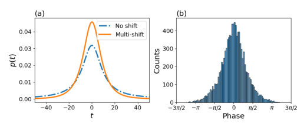
<figcaption class="paper-figure-caption"><b>Fig 1.</b> FIG. 1. (a) Comparison of the probability densities with and without multi-shift. (b) Phase distribution over 10,000 runs with multi-shift. The parameters are a = 30, k = 3, and τ = 10.</figcaption>
</figure>
<figure class="paper-figure-card">
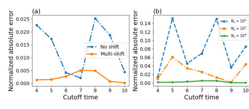
<figcaption class="paper-figure-caption"><b>Fig 2.</b> FIG. 2. Comparison of the ground-state energy error obtained with and without multi-shift under different cutoff times tm using the function W(t) defined in Eq. (9). The results are averaged over 10 experiments. (a) Ground-state energy error with and without multi-shift for different cutoff times, with 104 Monte Carlo samples used in each experiment. (b) Ground-state energy error for different numbers of Monte Carlo samples with multi-shift for different cutoff times. The initial state is chosen to be a computational basis state. The parameters of the Ising model are n = 6, J = 2, and h = 1, with τ = 10.</figcaption>
</figure>
<figure class="paper-figure-card">
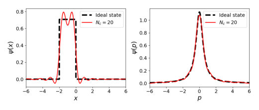
<figcaption class="paper-figure-caption"><b>Fig 3.</b> FIG. 3. Illustration of the finite-photon-number approximation of the step-function state and resource state in the Fock space. As the photon-number truncation increases, the resulting state approaches the ideal state.</figcaption>
</figure>
<figure class="paper-figure-card">
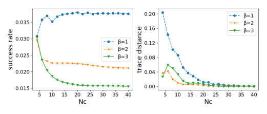
<figcaption class="paper-figure-caption"><b>Fig 4.</b> FIG. 4. Success probability and trace distance versus photon- number truncation for thermal-state preparation using the step-function state as the projection state. The underlying quantum Ising model has parameters n = 4, J = 1, and h = 1, and a constant has been added to ensure that all its eigenvalues are positive. The parameter L of the step- function state is chosen such that Lτ = 1.256, corresponding to the optimal success probability.</figcaption>
</figure>
<figure class="paper-figure-card">
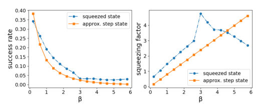
<figcaption class="paper-figure-caption"><b>Fig 5.</b> FIG. 5. Comparison of the success probability and the resource consumption, quantified by the squeezing factor, for preparing thermal states with the same accuracy using the approximate step-function state and the squeezed state at different inverse temperatures. The theoretically optimal L for the step-function state is used. The underlying quantum Ising model has parameters n = 4, J = 1, and h = 1, and a constant has been added to ensure that all its eigenvalues are positive.</figcaption>
</figure>
</div>

<p><strong>Summary.</strong> This paper introduces Multi-shift Quantum Imaginary-Time Evolution (MS-QITE) to overcome limitations in simulating quantum many-body systems on quantum computers. By engineering interference using a distribution of energy shifts, MS-QITE improves the efficiency and stability of ground-state and thermal-state preparation. This technique offers a general framework for optimizing quantum algorithms by exploiting spectral transformations.</p>
<p><strong>Why it may be interesting.</strong> The technique provides a powerful, interference-based resource to optimize quantum algorithms for simulating thermal and ground states, which is a central theme in quantum simulation.</p>
<details>
<summary>Detailed structure</summary>
<p><strong>Main problem.</strong> The paper addresses the challenge of efficiently implementing imaginary-time evolution (ITE) for ground-state and thermal-state preparation on quantum computers.</p>
<p><strong>Main result.</strong> The proposed Multi-shift Quantum Imaginary-Time Evolution (MS-QITE) uses a distribution of energy shifts to engineer interference, significantly improving the stability and reducing the required resources for state preparation.</p>
<p><strong>Method.</strong> The core method involves modifying the standard ITE by introducing a distribution of energy shifts, which transforms the evolution into a controllable real-time superposition integral.</p>
<p><strong>Model / system.</strong> The method is tested on quantum many-body systems, specifically using the transverse-field Ising model Hamiltonian. The implementation is demonstrated in both Monte Carlo sampling and continuous-variable-assisted schemes.</p>
<p><strong>Key observables.</strong> Ground-state energy error, success probability, and trace distance for thermal state preparation.</p>
<p><strong>Important parameters / regimes.</strong> The energy shift distribution $f(q)$, the number of shifts $k$, and the imaginary time $   au$.</p>
<p><strong>Assumptions / limitations.</strong> The approach relies on the fact that energy shifts generate relative phases that interfere when implemented on a quantum computer, even if they are trivial in normalization.</p>
<p><strong>Figures summary.</strong> Figures compare probability densities with and without multi-shift, show ground-state energy error vs. cutoff time, and illustrate success probability/resource consumption for thermal state preparation.</p>
<p><strong>Paper structure.</strong> The paper introduces MS-QITE by relating it to the real-time superposition of evolutions. It then details its application in Monte Carlo and continuous-variable settings, culminating in numerical results on the Ising model.</p>
</details>
<details>
<summary>Abstract</summary>
<p>Energy shifting is usually trivial in imaginary-time evolution because it changes only the normalization of the evolved state. On a quantum computer, however, imaginary-time evolution can be implemented as a coherent or sampled superposition of real-time evolutions, in which energy shifts generate relative phases that can interfere. Here we introduce multi-shift quantum imaginary-time evolution (MS-QITE), which uses a distribution of energy shifts to engineer interference and optimize different implementations. In a Monte Carlo realization, multi-shift reshapes the sampling distribution and concentrates it within a shorter real-time window, thereby reducing the required Hamiltonian-evolution time and improving the stability of ground-state-energy estimation. In a continuous-variable-assisted realization, it permits postselection over a finite quadrature interval rather than near a single quadrature value, substantially reducing resource consumption while retaining accurate thermal-state preparation. Numerical results for transverse-field Ising models demonstrate that energy shifts provide a useful interference-based approach for optimizing quantum imaginary-time evolution.</p>
</details>
<p><sub><a href="#top">↑ back to top</a></sub></p>

<p><a id="paper-2608.17854"></a></p>
<h3 id="a-quantum-optical-concept-of-attosecond-pulses-the-attoquants"><a href="http://arxiv.org/abs/2608.17854v1">A quantum optical concept of attosecond pulses: the attoquants</a></h3>
<p><strong>Authors:</strong> Sándor Varró, Ákos Gombkötő<br>
<strong>Type:</strong> theory · <strong>Category:</strong> other · <strong>PDF:</strong> <a href="https://arxiv.org/pdf/2608.17854v1">https://arxiv.org/pdf/2608.17854v1</a><br>
<strong>Analysis basis:</strong> full PDF text, analyzed in chunks
<strong>Topic relevance:</strong> <code>interference shaping light</code> <strong>3/5</strong> · <code>Full counting statistics</code> <strong>1/5</strong> · <code>quantum measurements</code> <strong>1/5</strong></p>
<div class="figure-strip-hint">↔ Scroll figures horizontally</div>
<div class="paper-figures-scroll">
<figure class="paper-figure-card">
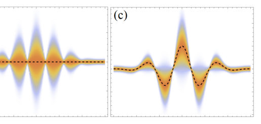
<figcaption class="paper-figure-caption"><b>Fig 1.</b> Figure 1. Illustration of the electric-field distribution within (a) a purely mean-field pulse, (b) a purely field-variance pulse, and (c) a general pulse, in which the field-variance maximum coincides with the field-average maximum. The classical value of the electric field is shown as a dashed line in each panel.</figcaption>
</figure>
<figure class="paper-figure-card">
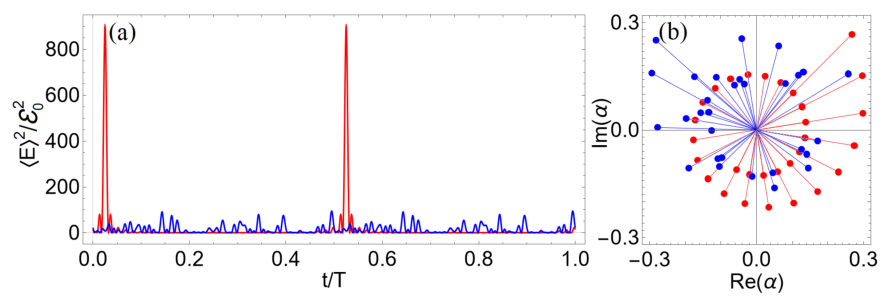
<figcaption class="paper-figure-caption"><b>Fig 2.</b> Figure 2. (a) Temporal structure of ⟨ˆE⟩2 in units of E2 0, resulting from semiclassical states [equation (9)]. One can compare the cases of mode-locked (red) and random-phase (blue) conditions. (b) Coherent state parameters of the constituent coherent states in the complex plane, for the mode-locked (red) and random-phase (blue) cases. Here M=30 harmonics (5th to 63rd) of identical harmonic energies are used, with |αn| = 1 √3+2n .</figcaption>
</figure>
<figure class="paper-figure-card">
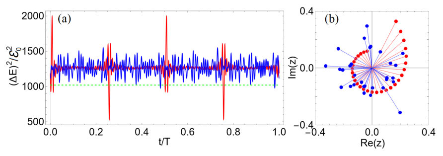
<figcaption class="paper-figure-caption"><b>Fig 3.</b> Figure 3. (a) Temporal structure of (∆ˆE)2 in units of E2 0, resulting from a product of squeezed-vacuum states [equation (12)]. One can compare the cases of mode-locked (red) and random-phase (blue) conditions. The dashed green line indicates the corresponding vacuum variance. (b) Complex squeezing parameters of the constituent squeezed-vacuum states in the complex plane, for the mode-locked (red) and random-phase (blue) cases, respectively. Here M=30 harmonics (5th to 63rd) of identical harmonic energies are used, with rn = arsinh 2.1 √2n0+1+2n .</figcaption>
</figure>
<figure class="paper-figure-card">
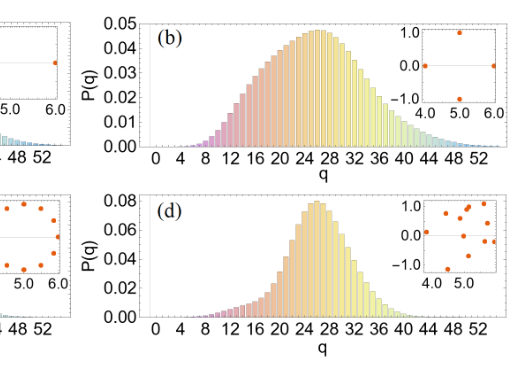
<figcaption class="paper-figure-caption"><b>Fig 4.</b> Figure 4. The photon statistics for {βk = 5 + δk} parameters, shown on the inset of each subfigure. (a)-(c) correspond to δk evenly distributed on a unit circle, with M=3, 4 and 12 modes, respectively. (d) corresponds to randomly distributed δk, with M=12 modes.</figcaption>
</figure>
<figure class="paper-figure-card">
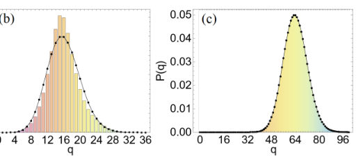
<figcaption class="paper-figure-caption"><b>Fig 5.</b> Figure 5. The photon statistics for {βk} parameters, distributed uniformly on a circle of modulus |βk| = 2 (a), |βk| = 4 (b), and |βk| = 8 (c). The corresponding Poissonian distribution is shown with black markers.</figcaption>
</figure>
</div>

<p><strong>Summary.</strong> This paper proposes 'attoquants,' a new quantum state concept, to explain attosecond pulse generation in High-Harmonic Generation (HHG) without relying on the classical requirement of phase-locking. By analyzing the coherent permanent state, the authors prove that this entangled state inherently supports pulse trains. This offers a quantum-mechanical framework for understanding ultrafast light sources driven by collective atomic effects.</p>
<p><strong>Why it may be interesting.</strong> This work directly bridges quantum optics and attosecond physics by proposing a fundamentally quantum mechanism (entanglement) to achieve pulse synthesis, moving beyond semi-classical approximations.</p>
<details>
<summary>Detailed structure</summary>
<p><strong>Main problem.</strong> To develop a quantum optical concept for attosecond pulse generation that bypasses the classical requirement of mutual phase-locking among emitted harmonics.</p>
<p><strong>Main result.</strong> The authors introduce 'attoquants,' a novel class of multimode quantum states, demonstrating that their electric-field expectation value yields an attosecond pulse train without requiring mode-locking.</p>
<p><strong>Method.</strong> The analysis involves constructing and characterizing the coherent permanent state (an attoquant) and calculating quantum diagnostics like photon statistics and logarithmic negativity.</p>
<p><strong>Model / system.</strong> The system is High-Harmonic Generation (HHG), modeled quantum mechanically as a harmonic radiation field composed of quantized electromagnetic modes. The core theoretical tool is the attoquant state, which is a permutation-symmetric superposition of coherent states.</p>
<p><strong>Key observables.</strong> Electric-field expectation value, photon statistics, Wigner function, and logarithmic negativity.</p>
<p><strong>Important parameters / regimes.</strong> The structure of the harmonic field (discrete frequencies $(2q+1)\omega$) and the concept of intermodal entanglement.</p>
<p><strong>Assumptions / limitations.</strong> The analysis is theoretical, offering a phenomenological interpretation for the physical origin of these entangled states based on multi-atom effects during HHG.</p>
<p><strong>Figures summary.</strong> Figures illustrate the electric-field distribution for different pulse synthesis methods (mean-field vs. field-variance) and compare the temporal structure of field intensity for mode-locked versus random phase states.</p>
<p><strong>Paper structure.</strong> The paper progresses from establishing the classical limitations of HHG to introducing the quantum attoquant concept, analytically deriving its properties, and finally providing a physical interpretation rooted in collective multi-atom radiation.</p>
</details>
<details>
<summary>Abstract</summary>
<p>High-harmonic generation (HHG) is conventionally understood to produce attosecond pulse trains only when the emitted harmonics are mutually phase-locked, in accordance with the classical theory of mode-locking. Such locking is necessary for pulse synthesis when the harmonic field is in a separable multimode quantum state. This requirement, however, can be circumvented entirely for harmonic combs exhibiting intermodal entanglement. We introduce a novel family of multimode quantum states, termed attoquants: states associated with highly structured pulse trains that are inherently insensitive to relative phases. As a concrete example, we analyse the coherent permanent state, constructed as a completely symmetric superposition of products of coherent states over all permutations of a fixed parameter set. It is shown analytically that its electric-field expectation value is a locked Fourier superposition of the driving-field harmonics, yielding an attosecond pulse train without requiring mode-locking. We further calculate the photon statistics, the Wigner function, and the logarithmic negativity of this state, confirming it to be genuinely nonclassical and entangled. Finally, we offer a phenomenological interpretation for the generation of such entangled states during HHG, as a consequence of multi-atom effects. Since the coherence volume of the driving field greatly exceeds that of its harmonics, a collectively-driven cluster of atoms can radiate the individual harmonics as spatially resolved, but fundamentally indistinguishable sources. This can generate the permutation-symmetric entanglement structure of an attoquant.</p>
</details>
<p><sub><a href="#top">↑ back to top</a></sub></p>

<p><a id="paper-2608.17115"></a></p>
<h3 id="block-encoding-non-abelian-lattice-gauge-theory"><a href="http://arxiv.org/abs/2608.17115v1">Block Encoding Non-Abelian Lattice Gauge Theory</a></h3>
<p><strong>Authors:</strong> Patrick Draper<br>
<strong>Type:</strong> theory · <strong>Category:</strong> quantum information and computing · <strong>PDF:</strong> <a href="https://arxiv.org/pdf/2608.17115v1">https://arxiv.org/pdf/2608.17115v1</a><br>
<strong>Analysis basis:</strong> full PDF text, analyzed in chunks
<strong>Topic relevance:</strong> <code>analog quantum simulation</code> <strong>3/5</strong> · <code>methods for driven-dissipative</code> <strong>1/5</strong> · <code>quantum measurements</code> <strong>1/5</strong></p>
<div class="figure-strip-hint">↔ Scroll figures horizontally</div>
<div class="paper-figures-scroll">
<figure class="paper-figure-card">
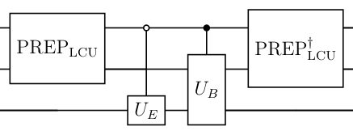
<figcaption class="paper-figure-caption"><b>Fig 1.</b> Figure 2: Block encoding of H = HE +HB as an LCU. p is a register whose basis states index each plaquette. The magnetic SELECT routes the single-plaquette oracle Up to the plaquette indexed by each |p⟩(Fig. 3).</figcaption>
</figure>
<figure class="paper-figure-card">
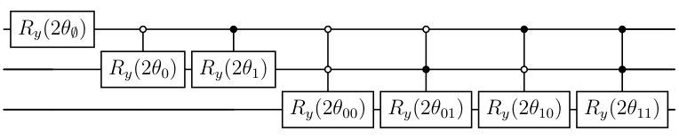
<figcaption class="paper-figure-caption"><b>Fig 2.</b> Figure 5: A three-qubit rotation tree. Each box is a programmed rotation of Fig. 4, and the wires from earlier qubits are controls on the phase-gradient addition.</figcaption>
</figure>
<figure class="paper-figure-card">
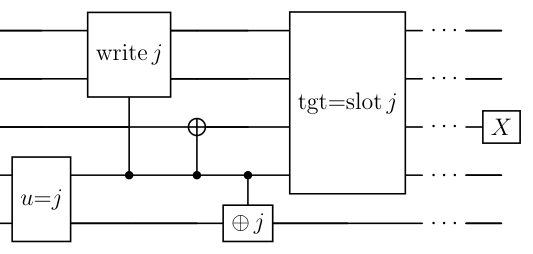
<figcaption class="paper-figure-caption"><b>Fig 3.</b> Figure 6: The write circuit W, drawn with one representative block. See text for the definition of each gate.</figcaption>
</figure>
<figure class="paper-figure-card">
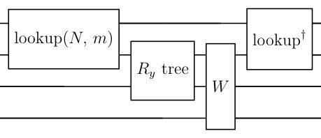
<figcaption class="paper-figure-caption"><b>Fig 4.</b> Figure 8: The sparse-target version of the lookup-rotation block. The tree prepares the branches on u, and the write step W moves them onto the target register.</figcaption>
</figure>
<figure class="paper-figure-card">
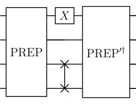
<figcaption class="paper-figure-caption"><b>Fig 5.</b> Figure 9: The single-plaquette magnetic oracle Up which block-encodes Hp/αp. PREP and PREP′†</figcaption>
</figure>
</div>

<p><strong>Summary.</strong> This paper presents a resource-efficient quantum circuit implementation for simulating the magnetic part of the Hamiltonian in non-Abelian lattice gauge theories. By developing a block encoding oracle for the plaquette operator, the authors significantly reduce the computational overhead associated with simulating these complex quantum field theories. This work advances the feasibility of simulating QCD dynamics on fault-tolerant quantum hardware.</p>
<p><strong>Why it may be interesting.</strong> The techniques developed—block encoding, programmed rotations, and lookup-based oracle construction—are highly relevant for implementing complex Hamiltonian terms in quantum simulation algorithms.</p>
<details>
<summary>Detailed structure</summary>
<p><strong>Main problem.</strong> Developing efficient quantum simulation methods for lattice gauge theories, particularly for real-time dynamics, which are challenging due to complex, correlated transitions in the magnetic part of the Hamiltonian.</p>
<p><strong>Main result.</strong> The authors propose an efficient block encoding oracle for the plaquette operator in the irrep basis, significantly reducing the resource cost compared to previous methods.</p>
<p><strong>Method.</strong> The method uses a block encoding oracle implemented via programmed rotation trees fed by quantum lookups of classically pre-computed, factorized matrix elements.</p>
<p><strong>Model / system.</strong> The system is non-Abelian lattice gauge theory, exemplified by Lattice QCD (SU(3)). The Hamiltonian involves electric and magnetic terms, with the magnetic part built from the plaquette operator.</p>
<p><strong>Key observables.</strong> The simulation targets the evolution governed by the full Hamiltonian, with specific focus on the plaquette operator $\square_p$ and the electric energy term $E_R$.</p>
<p><strong>Important parameters / regimes.</strong> The resource cost is estimated in T gates (e.g., $10^5$ to $10^6$ for SU(3)), and the logical qubit count scales with the lattice volume $L^3$.</p>
<p><strong>Assumptions / limitations.</strong> The simulation is designed for the fault-tolerant, error-corrected quantum computation regime, and the method relies on truncating the Hilbert space using a Casimir cutoff $B$.</p>
<p><strong>Figures summary.</strong> Figure 1 illustrates the components of a plaquette and its state, while Figure 16 details the quantum circuit structure for calculating the electric energy term $H_E$.</p>
<p><strong>Paper structure.</strong> The paper progresses by reviewing the Hamiltonian and basis, detailing the decomposition into electric and magnetic parts, describing the magnetic block encoding, presenting resource estimates, and discussing its application in QSVT.</p>
</details>
<details>
<summary>Abstract</summary>
<p>Gauge theories like lattice QCD present a complex problem for quantum simulation. In a basis where the electric part of the Hamiltonian is simple, the magnetic part, generally expressed as a sum over the plaquette operators of the lattice, is quite complicated, producing correlated transitions between several link and site degrees of freedom. We provide an efficient block encoding of the plaquette operator in the irrep basis, a refinement of the electric basis where the internal gauge-variant degrees of freedom are integrated out. The construction removes the plaquette matrix element scaling wall which has been a significant barrier for other approaches in this basis. The algorithm leverages a convenient factorization property of the matrix elements, cheap classical precomputation, and quantum oracles built from lookup tables and programmed rotations.</p>
</details>
<p><sub><a href="#top">↑ back to top</a></sub></p>

<p><a id="paper-2608.17479"></a></p>
<h3 id="chiral-rotational-dynamics-in-the-molecular-frame-breaking-symmetry-with-angular-momentum"><a href="http://arxiv.org/abs/2608.17479v1">Chiral rotational dynamics in the molecular frame: Breaking symmetry with angular momentum</a></h3>
<p><strong>Authors:</strong> Alexander Blech, Monika Leibscher, Christiane P. Koch<br>
<strong>Type:</strong> both · <strong>Category:</strong> other · <strong>PDF:</strong> <a href="https://arxiv.org/pdf/2608.17479v1">https://arxiv.org/pdf/2608.17479v1</a><br>
<strong>Analysis basis:</strong> full PDF text, analyzed in chunks
<strong>Topic relevance:</strong> <code>quantum measurements</code> <strong>3/5</strong> · <code>interference shaping light</code> <strong>1/5</strong> · <code>methods for driven-dissipative</code> <strong>1/5</strong></p>
<div class="figure-strip-hint">↔ Scroll figures horizontally</div>
<div class="paper-figures-scroll">
<figure class="paper-figure-card">
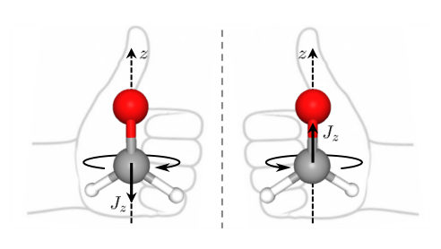
<figcaption class="paper-figure-caption"><b>Fig 1.</b> FIG. 1. A rotating achiral molecule, here CH2O, becomes dynamically chiral: The sense of rotation reverses upon re- flection, breaking the molecule’s mirror symmetry. Handed- ness can be assigned via the convention of the thumb oriented along the molecular symmetry axis (dashed arrow), and the fingers represent the sense of rotation encoded in the angular momentum component Jz (solid arrow).</figcaption>
</figure>
<figure class="paper-figure-card">
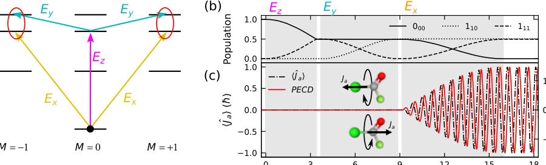
<figcaption class="paper-figure-caption"><b>Fig 2.</b> FIG. 2. Rotational chirality induced in an achiral asymmetric rotor, here COFCl, by a sequence of three microwave pulses, polarized along three mutually orthogonal directions. (a) Rotor spectrum and excitation scheme with initial state (black dot) and final superposition (red ellipses). (b) Population dynamics (accumulated over M). (c) Expectation value of the angular momentum component along the a-axis, quantifying the induced chirality, as well as LPECD as obtained after one-photon ionization with an ultrashort XUV pulse. The microwave pulses are indicated in gray.</figcaption>
</figure>
<figure class="paper-figure-card">
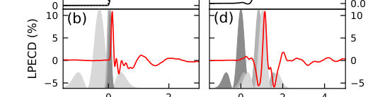
<figcaption class="paper-figure-caption"><b>Fig 3.</b> FIG. 3. Rotational chirality induced in a thermal ensemble of achiral asymmetric rotors, here CH2O at a temperature of 5 K, by THz and optical pulses (gray shadings) with mutually orthogonal polarization directions: (a,b) combination of a THz pulse with two femtosecond optical pulses; (c,d) three THz pulses. (a,c) Angular momentum components along the laboratory Z-axis, signaling unidirectional rotation, and along the molecular a-axis, quantifying the induced chirality. (b,d) LPECD signal assuming instantaneous ionization.</figcaption>
</figure>
</div>

<p><strong>Summary.</strong> This paper proposes a method to generate rotational chirality in achiral molecules by manipulating their angular momentum using precisely timed microwave or THz/optical pulse sequences. By satisfying strict symmetry breaking conditions, the induced chirality can be measured using Photoelectron Circular Dichroism. This opens a new avenue for studying time-odd chiroptical phenomena in fundamental molecular systems.</p>
<p><strong>Why it may be interesting.</strong> This work is highly relevant to AMO physics as it tackles the fundamental control of molecular quantum states using tailored electromagnetic pulses, pushing the boundaries of chiroptical spectroscopy in the gas phase.</p>
<details>
<summary>Detailed structure</summary>
<p><strong>Main problem.</strong> The paper addresses the challenge of generating and investigating time-odd (false) chirality in isolated, achiral molecules by controlling their rotational dynamics.</p>
<p><strong>Main result.</strong> The authors demonstrate that rotational chirality can be induced in randomly oriented molecules using specific sequences of microwave or combined THz/optical pulses, which can be probed via Photoelectron Circular Dichroism (PECD).</p>
<p><strong>Method.</strong> The theoretical framework involves deriving symmetry conditions for creating chiral superpositions of rotational states, while the experimental proposals utilize pulsed laser/microwave excitation sequences.</p>
<p><strong>Model / system.</strong> The system studied is the rigid asymmetric rotor (e.g., $   ext{CH}_2   ext{O}$, $  ext{COFCl}$), whose dynamics are governed by the time-dependent Schrödinger equation under external pulsed fields.</p>
<p><strong>Key observables.</strong> The expectation value of the angular momentum projection ($\langle \hat{J}_z 
angle$) and the Photoelectron Circular Dichroism (PECD) signal are the key diagnostics for induced chirality.</p>
<p><strong>Important parameters / regimes.</strong> The required excitation involves at least three microwave or polarization directions (X, Y, Z) to break both spatial and molecular point group symmetries.</p>
<p><strong>Assumptions / limitations.</strong> The analysis assumes the rigid rotor approximation and that the probe pulse is short compared to the rotational dynamics timescale.</p>
<p><strong>Figures summary.</strong> Figures illustrate the excitation schemes (microwave/THz/optical) and show the time evolution of the induced angular momentum ($\langle \hat{J}_a 
angle$) and the corresponding PECD signal, demonstrating controllable handedness.</p>
<p><strong>Paper structure.</strong> The paper moves from defining the problem (time-odd chirality) to deriving the necessary symmetry conditions for state superposition, detailing specific pulse sequences for microwave and optical excitation, and finally presenting PECD as the measurable diagnostic.</p>
</details>
<details>
<summary>Abstract</summary>
<p>Achiral molecules can be prepared in superposition states that are chiral. Here, we propose angular momentum orientation in the molecular frame to achieve the required symmetry breaking, exerting rotational control without the need for laboratory frame orientation. We derive the conditions for chiral rotational dynamics from the requirement to simultaneously break the continuous spatial rotational symmetry and the molecular point group symmetry. This can be achieved by three microwave pulses as well as two non-resonant optical pulses in combination with a THz pulse or three THz pulses, all with mutually orthogonal polarization directions, and the ensuing dynamics can be probed by photoelectron circular dichroism. Our results open the way for distinguishing structural from dynamical enantioselectivity and investigating time-odd chiroptical phenomena in randomly oriented molecules.</p>
</details>
<p><sub><a href="#top">↑ back to top</a></sub></p>

<p><a id="paper-2608.17619"></a></p>
<h3 id="irradiation-induced-spin-bath-evolution-and-as-grown-hydrogen-defects-in-cvd-diamond-revealed-by-nv-based-deer-spectroscopy"><a href="http://arxiv.org/abs/2608.17619v1">Irradiation-Induced Spin Bath Evolution and as-Grown Hydrogen Defects in CVD Diamond Revealed by NV-Based DEER Spectroscopy</a></h3>
<p><strong>Authors:</strong> Olga Rubinas, Jeroen Prooth, Michael Petrov, Remy Vandebosch, Emilie Bourgeois, David Chvatil, Milos Nesladek<br>
<strong>Type:</strong> experiment · <strong>Category:</strong> other · <strong>PDF:</strong> <a href="https://arxiv.org/pdf/2608.17619v1">https://arxiv.org/pdf/2608.17619v1</a><br>
<strong>Analysis basis:</strong> full PDF text, analyzed in chunks
<strong>Topic relevance:</strong> <code>QC/QI experiment</code> <strong>3/5</strong> · <code>quantum measurements</code> <strong>2/5</strong></p>
<div class="figure-strip-hint">↔ Scroll figures horizontally</div>
<div class="paper-figures-scroll">
<figure class="paper-figure-card">
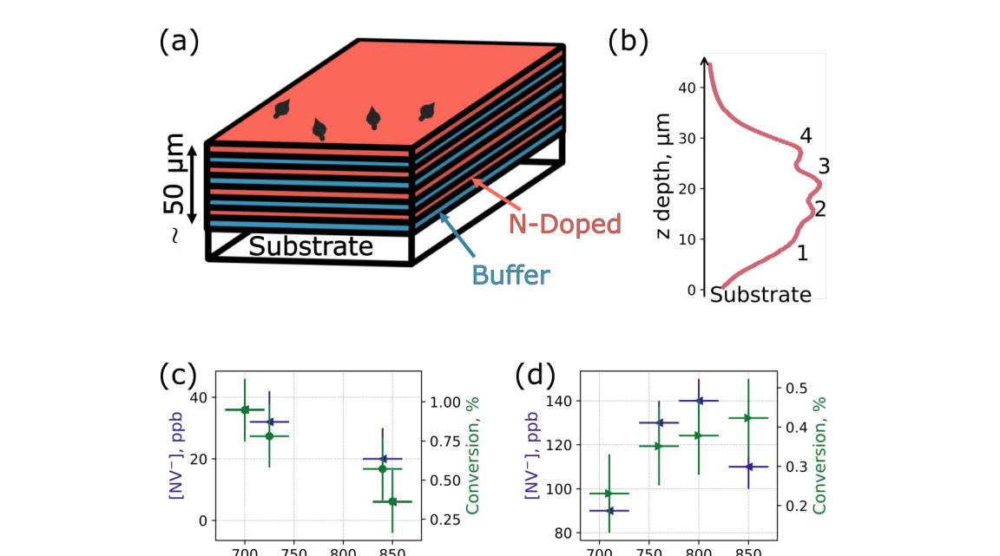
<figcaption class="paper-figure-caption"><b>Fig 1.</b> Figure 1. Growth design and nitrogen incorporation trends in CVD diamond samples. (a) Schematic of the multilayer diamond structure used for samples S1 and S3, composed of alternating nitrogen-free (buffer) and nitrogen-doped layers (L1–L4) grown on type-Ib HPHT</figcaption>
</figure>
<figure class="paper-figure-card">
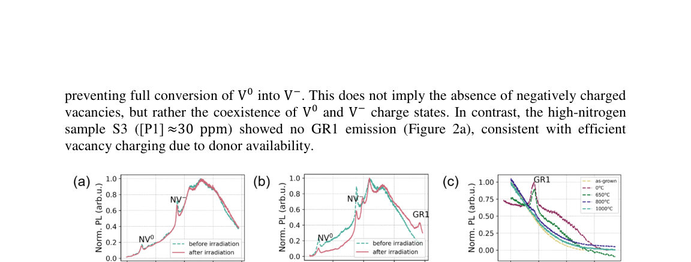
<figcaption class="paper-figure-caption"><b>Fig 2.</b> Figure 2. Photoluminescence spectra of CVD diamond samples before and after irradiation and during annealing. (a) The high-nitrogen sample S3(L4) ([P1] ≈ 30 ppm) was recorded before and after electron irradiation. No GR1 signal appears. (b) PL spectra of the medium-nitrogen sample S2 ([P1] ≈ 10 ppm) before and after irradiation, showing the emergence of the GR1 center’s ZPL at 741 nm, characteristic of neutral vacancies (V0). (c) Evolution of the PL spectrum of the low- nitrogen reference sample S4 ([P1] ≈ 1 ppm) through successive stages: as-grown, after irradiation, and following annealing at 650–1000 °C.</figcaption>
</figure>
<figure class="paper-figure-card">
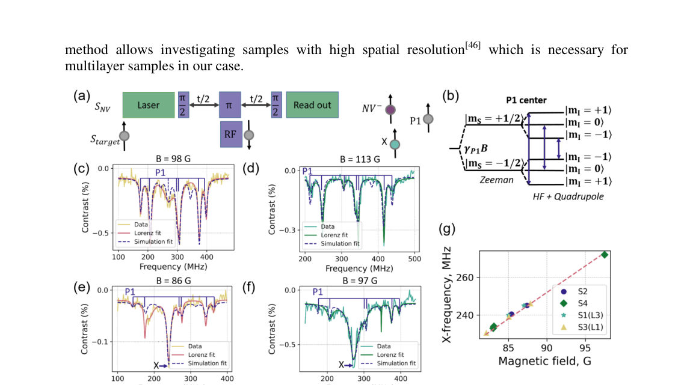
<figcaption class="paper-figure-caption"><b>Fig 3.</b> Figure 3. DEER spectroscopy of CVD diamond samples before and after irradiation. (a) Pulse sequence of the double electron–electron resonance (DEER). (b) Energy-level diagram of the P1 center (S =</figcaption>
</figure>
<figure class="paper-figure-card">
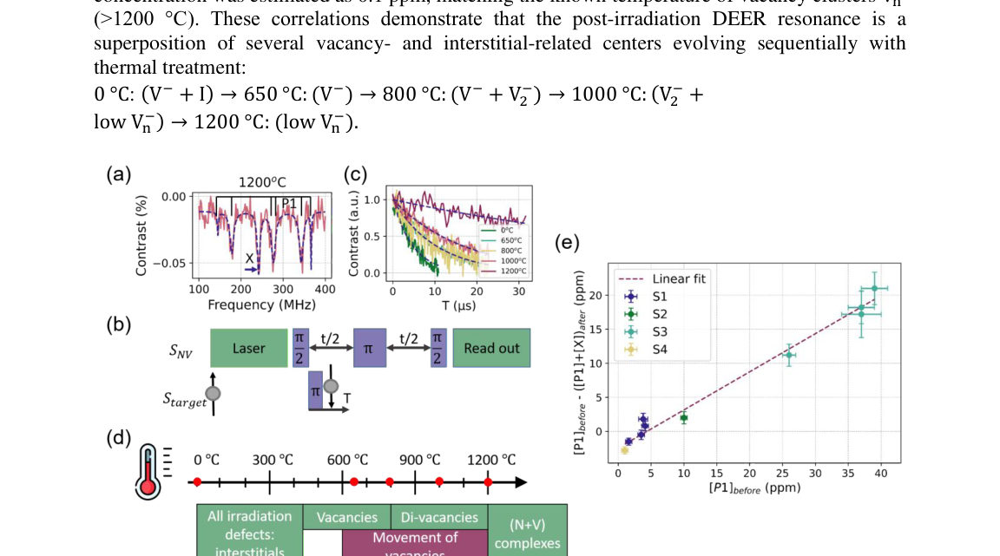
<figcaption class="paper-figure-caption"><b>Fig 4.</b> Figure 4. Evolution of X-center and donor concentrations revealed by DEER spectroscopy. (a) DEER spectrum of sample S4 after 1200 °C annealing, showing that the X-center resonance remains of comparable amplitude to the P1 center transitions, indicating the persistence of a small residual paramagnetic population. (b) DEER-decay pulse sequence used to quantify spin-bath concentrations and dipolar coupling strengths between NV centers and surrounding paramagnetic defects. (c) DEER decay curves on X resonance of sample S4 recorded after successive annealing steps from as irradiated to 1200 °C, demonstrating the progressive reduction of the X-center signal. (d) Schematic qualitative illustration...</figcaption>
</figure>
<figure class="paper-figure-card">
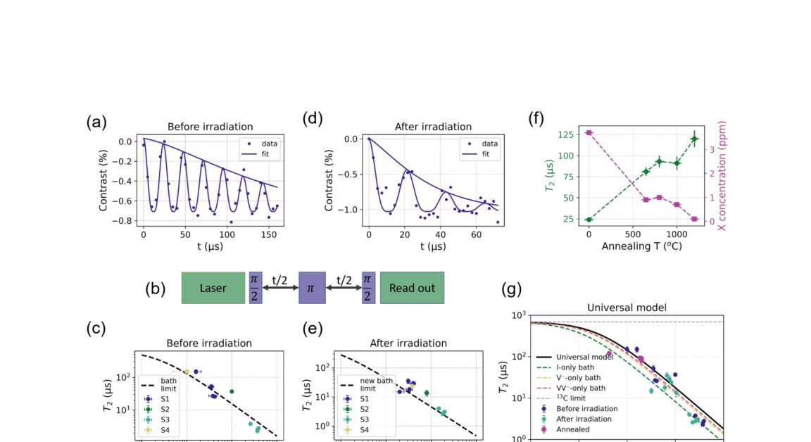
<figcaption class="paper-figure-caption"><b>Fig 5.</b> Figure 5. Spin coherence properties of NV⁻ ensembles in CVD diamond before and after irradiation. (a) Hahn-echo decay measured on the reference sample S4 (before irradiation). (b) Pulse sequence of the Hahn-echo and DEER protocols used for T2 characterization. (c) Correlation of the ensemble T2 with P1 concentration in as-grown samples, together with the classical dipolar- bath model. (d) Hahn-echo decay of the sample S4 after irradiation. (e) Dependence of T2 on the combined defect concentration [P1] + [X] after irradiation, fitted with the corrected spin-bath model including the composite X-ensemble (V− + interstitial-related defects). (f) Variation of T2 (green symbols) and X-center...</figcaption>
</figure>
</div>

<p><strong>Summary.</strong> This paper reviews the use of NV-DEER spectroscopy to characterize paramagnetic defects in CVD diamond. By tracking defect formation and transformation through annealing and irradiation, the authors developed a model linking defect control to the achievable spin coherence time. This establishes the method as a powerful tool for optimizing diamond for advanced quantum sensing applications.</p>
<p><strong>Why it may be interesting.</strong> This work provides a detailed experimental roadmap for controlling solid-state spin baths, which is crucial for developing robust quantum memories and sensors based on solid-state qubits.</p>
<details>
<summary>Detailed structure</summary>
<p><strong>Main problem.</strong> To understand the fabrication process and optimize the material quality of CVD diamond for use in quantum sensing by characterizing the evolution of paramagnetic defects.</p>
<p><strong>Main result.</strong> The study successfully mapped the transformation of various defects (X-centers, vacancies, hydrogen species) during annealing, demonstrating that NV-DEER spectroscopy is a powerful tool for achieving high spin coherence times.</p>
<p><strong>Method.</strong> The research uses Double Electron-Electron Resonance (DEER) spectroscopy combined with controlled thermal annealing and electron irradiation of CVD diamond samples.</p>
<p><strong>Model / system.</strong> The physical system is CVD diamond containing NV centers and various paramagnetic impurities (P1, vacancies, hydrogen). A Hamiltonian-based model is used to interpret the dipolar coupling measured by DEER.</p>
<p><strong>Key observables.</strong> Spin coherence time ($T_2$), DEER spectral features corresponding to specific defect species ($  ext{V}^-$, $    ext{NVH}^-$), and defect concentrations.</p>
<p><strong>Important parameters / regimes.</strong> Annealing temperatures ($650^\circ	ext{C}$ to $1200^\circ	ext{C}$), electron irradiation dose, and the coupling strengths between different spin bath components.</p>
<p><strong>Assumptions / limitations.</strong> The analysis relies on developing and applying a comprehensive spin bath model that accounts for independent couplings between multiple defect types.</p>
<p><strong>Figures summary.</strong> The notes mention Figure 1 showing the growth design and nitrogen incorporation trends for multilayer diamond samples.</p>
<p><strong>Paper structure.</strong> The paper follows a structure of reviewing the state-of-the-art, detailing the experimental methodology (sample preparation, irradiation, annealing), presenting the defect evolution tracking via DEER, and concluding with a model linking defect control to high coherence times.</p>
</details>
<details>
<summary>Abstract</summary>
<p>The aim of this paper is to provide the reader with a review and current state of the art of the fabrication of high T2 coherence diamond, optimised by the use of double electron-electron resonance (DEER) spectroscopy. Using DEER, we study the formation, transformation, and annealing of paramagnetic defects in as-grown CVD diamond and after post-processing. Electron irradiation leads to the formation of an additional S = 1/2 resonance in the DEER spectrum, which we consider to be a composite X ensemble. By tracking the concentrations of X and P1 point defects during annealing from 650C to 1200C, we find that the X ensemble initially consists of a mixture of V- spins and interstitial spins, which disappear at about 650C. Vacancies migrate during annealing, forming clusters that persist to 1000C and disappear upon annealing at 1200C, contributing to the X ensemble signal. We have developed a model of the influence of the mixed spin bath on the coherence of NV centers, which includes independent couplings with P1 centers, V-, divacancies, and interstitials. Detailed DEER studies allowed us to reveal and resolve a weak signal from two additional S = 1/2 species associated with hydrogen: NVH- and consistent with a substitutional hydrogen defect, which overlaps the vacancy spectral line. Taken together, these results show that the NV-DEER method is a powerful tool for investigating paramagnetic defects in diamond with high precision and nanoscale resolution, essential for material optimisation. The achieved high T2 coherence time is consistent with the spin bath model, and the crystals reach the quality required for advanced quantum sensing applications.</p>
</details>
<p><sub><a href="#top">↑ back to top</a></sub></p>

<p><a id="paper-2608.18065"></a></p>
<h3 id="quantum-geometric-tensor-preconditioning-for-stable-training-of-recurrent-neural-quantum-states"><a href="http://arxiv.org/abs/2608.18065v1">Quantum Geometric Tensor Preconditioning for Stable Training of Recurrent Neural Quantum States</a></h3>
<p><strong>Authors:</strong> Adil Attar, Amine M. Aboussalah, Mohamed Hibat-Allah<br>
<strong>Type:</strong> theory · <strong>Category:</strong> disordered systems and neural networks · <strong>PDF:</strong> <a href="https://arxiv.org/pdf/2608.18065v1">https://arxiv.org/pdf/2608.18065v1</a><br>
<strong>Analysis basis:</strong> full PDF text, analyzed in chunks
<strong>Topic relevance:</strong> <code>analog quantum simulation</code> <strong>3/5</strong> · <code>methods for driven-dissipative</code> <strong>2/5</strong></p>
<div class="figure-strip-hint">↔ Scroll figures horizontally</div>
<div class="paper-figures-scroll">
<figure class="paper-figure-card">
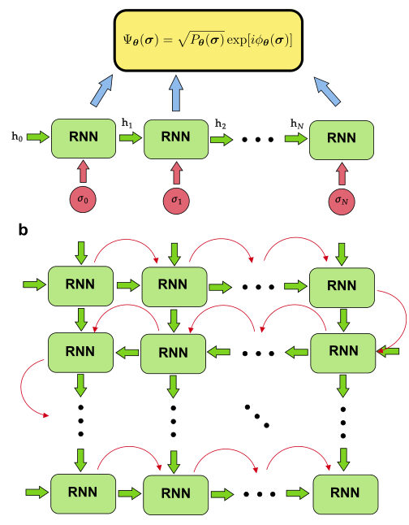
<figcaption class="paper-figure-caption"><b>Fig 1.</b> Figure 1: Illustration of RNN wave functions. a) Schematic of an RNN wave function. A series of spins σi are sequentially provided as an input into the RNN cell (shown in green), which produces a list of outputs yi (shown in blue). Subsequently, the Softmax and/or Softsign layers are applied to compute the amplitude and phase of the wave function, respectively. The outputs of the RNN can be used to calculate the wave function through its amplitude and phase. b) Schematic of a 2D RNN. Each RNN cell (shown in green) takes a spin in a 2D array as an input and outputs two identical hidden states, drawn as green arrows, to each of its nearest neighbors. The autoregressive property can be applied...</figcaption>
</figure>
<figure class="paper-figure-card">
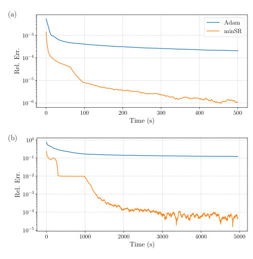
<figcaption class="paper-figure-caption"><b>Fig 2.</b> Figure 2: One-dimensional benchmark comparison between Adam and minSR optimizers on two testbeds a) the 1D TFIM and b) the Cluster state. a) We find the ground state energy of the TFIM Hamiltonian with open boundary conditions with 200 spins at the critical point h = J = 1. The underlying model is a pRNN with dh = 32 hidden units and Ns = 100 Monte Carlo samples. The relative error with respect to the exact theoretical value [61] is plotted against time in seconds. To minimize statistical noise, the relative errors are averaged over a 300 training-step window. b) A comparison between Adam and minSR optimizers for the one-dimensional cluster state for N = 100 qubits. The relative error with...</figcaption>
</figure>
<figure class="paper-figure-card">
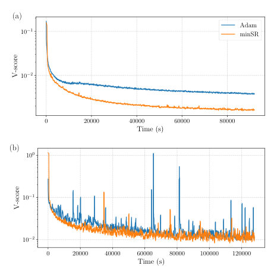
<figcaption class="paper-figure-caption"><b>Fig 3.</b> Figure 3: 2D J1 −J2 model benchmark. We compare the Adam and minSR optimizers by showing the evolution of the V-score (39) versus time in seconds at (a) the Heisenberg point J2 = 0, and (b) the frustrated regime of J2 = 0.5. We apply a moving average with a window size of 200 iterations to minimize statistical noise. Our results show an enhancement of accuracy when applying minSR at J2 = 0, but an accuracy comparable to that of Adam at J2 = 0.5.</figcaption>
</figure>
<figure class="paper-figure-card">
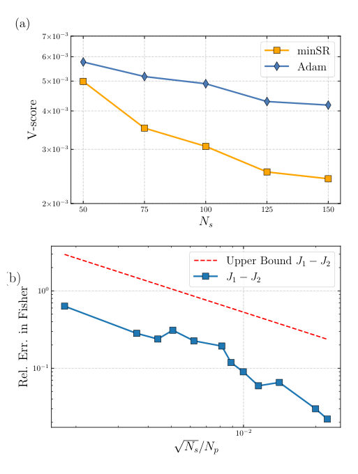
<figcaption class="paper-figure-caption"><b>Fig 4.</b> Figure 5: Scaling Study of minSR. (a) We plot the V-score (see Eq. (39)) of Adam and minSR on a 10 × 10 antiferromagnetic Heisenberg model with OBC and dh = 100. We increase the number of samples Ns, plotted on the x-axis, and observe the effect on the V-score for both Adam and minSR. We keep an equal training time of 24 hours for all data points. We plot Adam as blue diamonds, and minSR as orange squares. (b) We plot the relative error of the subsampled SR metric ∥S −˜S∥F /∥S∥F against √Ns</figcaption>
</figure>
<figure class="paper-figure-card">
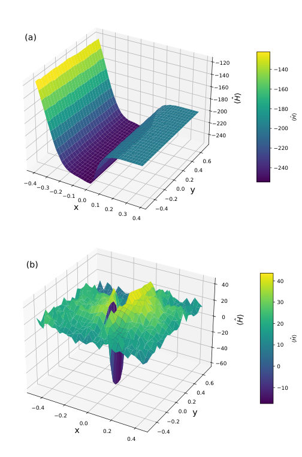
<figcaption class="paper-figure-caption"><b>Fig 5.</b> Figure 4: Loss Landscape in 1D and 2D. We plot the loss landscapes of the a) 1D TFIM and b) 2D Heisenberg model around their optimal parameters, from section III, on a 60 × 60 grid. Each energy is calculated using 103 samples, which we found sufficient to discern important features of the loss landscape.</figcaption>
</figure>
</div>

<p><strong>Summary.</strong> This paper develops a stable training protocol for using Recurrent Neural Networks to represent quantum many-body wave functions. It overcomes the known instability of second-order optimizers like minSR by introducing regularization techniques. The stabilized method proves highly effective, offering a powerful tool for simulating complex quantum Hamiltonians.</p>
<p><strong>Why it may be interesting.</strong> This work directly tackles the practical limitations of using advanced quantum machine learning techniques (RNN-NQS) for simulating complex quantum matter, providing a robust optimization pathway for variational quantum simulation.</p>
<details>
<summary>Detailed structure</summary>
<p><strong>Main problem.</strong> The paper addresses the instability of using second-order optimization methods, like minimum-step stochastic reconfiguration (minSR), when training Recurrent Neural Network Quantum States (RNN-NQS).</p>
<p><strong>Main result.</strong> By applying simple regularization techniques to the minSR update, the authors stabilize the training process, showing that the method outperforms the Adam optimizer on several benchmark quantum models.</p>
<p><strong>Method.</strong> The core method involves variational optimization of the energy expectation value using RNNs to parameterize the wave function, coupled with advanced analysis of the Fisher information matrix spectrum to stabilize the natural gradient descent update.</p>
<p><strong>Model / system.</strong> The framework is applied to quantum many-body systems, including the 1D transverse-field Ising model, 1D cluster state, 2D Heisenberg, and J1-J2 models, using RNNs to represent the wave function $|\Psi_	heta
angle$.</p>
<p><strong>Key observables.</strong> Energy expectation value $\langle\hat{H}
angle$, the Fisher information matrix spectrum, and the condition number $\kappa_2(S_\lambda)$ are key diagnostics.</p>
<p><strong>Important parameters / regimes.</strong> The regularization parameter $\lambda$ (Tikhonov parameter) and the number of Monte Carlo samples $N_s$ are crucial hyperparameters.</p>
<p><strong>Assumptions / limitations.</strong> The analysis relies on the i.i.d. sampling assumption for error bounding and assumes that careful preconditioning can mitigate the ill-conditioned nature of the RNN Fisher spectrum.</p>
<p><strong>Figures summary.</strong> Figures illustrate the schematic structure of RNN wave functions for 1D and 2D lattices, and Figure 6 specifically shows the training stability of minSR as a function of the regularization parameter $\lambda$ and sample size $N_s$.</p>
<p><strong>Paper structure.</strong> The paper progresses from introducing RNN-NQS and the optimization goal, to analyzing the inherent instability of minSR due to the RNN structure, developing the regularization technique, and finally benchmarking the stabilized method against Adam on various quantum Hamiltonians.</p>
</details>
<details>
<summary>Abstract</summary>
<p>Neural Quantum States (NQS) provide a powerful neural network-based variational framework for representing many-body wave functions and solving for ground states. Recurrent Neural Networks (RNNs) are particularly promising owing to their relatively low computational cost and their autoregressive property, which enables perfect sampling. Recently, RNNs have been reported to be unstable under curvature-based optimizers such as the minimum-step stochastic reconfiguration (minSR) method. In this paper, we address this perceived limitation and show that minSR can be stabilized through simple regularization techniques, enabling robust training of RNN-based NQS with only a few samples. Our approach outperforms the Adam optimizer on the one-dimensional transverse-field Ising model and the one-dimensional cluster state, and provides competitive results on the two-dimensional Heisenberg and $J_1-J_2$ models. This work offers a promising pathway for using modern optimization techniques with autoregressive NQS to address open questions in quantum simulation.</p>
</details>
<p><sub><a href="#top">↑ back to top</a></sub></p>

<p><a id="paper-2608.17303"></a></p>
<h3 id="second-harmonic-generation-spectroscopy-of-the-surface-charge-density-wave-in-the-weyl-semimetal-cosi"><a href="http://arxiv.org/abs/2608.17303v1">Second Harmonic Generation Spectroscopy of the Surface Charge Density Wave in the Weyl Semimetal CoSi</a></h3>
<p><strong>Authors:</strong> Awadhesh K. Das, Wesley E. Deeg, Sujan Subedi, Chandra Shekhar, Claudia Felser, Darius H. Torchinsky<br>
<strong>Type:</strong> experiment · <strong>Category:</strong> statistical mechanics · <strong>PDF:</strong> <a href="https://arxiv.org/pdf/2608.17303v1">https://arxiv.org/pdf/2608.17303v1</a><br>
<strong>Analysis basis:</strong> full PDF text, analyzed in chunks
<strong>Topic relevance:</strong> <code>non-equilibrium universality</code> <strong>3/5</strong> · <code>Frenkel-Kontorova</code> <strong>1/5</strong> · <code>driven-dissipative phase transition</code> <strong>1/5</strong></p>
<div class="figure-strip-hint">↔ Scroll figures horizontally</div>
<div class="paper-figures-scroll">
<figure class="paper-figure-card">
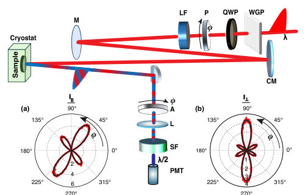
<figcaption class="paper-figure-caption"><b>Fig 1.</b> Fig. 1. Schematic diagram of the experimental setup for SHG measurements. Optics are WGP-wire grid polar- izer, QWP-quarter wave plate, P-polarizer, LF-longpass fil- ter, M-mirror, CM-concave mirror, A-analyzer, L-lens, SF- shortpass filter and PMT-photomultiplier tube. The funda- mental (ω) and second harmonic (2ω) beams are represented in red and blue, respectively. Polar plots (a) I∥and (b) I⊥ show raw data (red) with fits (black) to surface point group C1. Here P and A are co-rotated, i.e., parallel for I∥and perpendicular for I⊥.</figcaption>
</figure>
<figure class="paper-figure-card">
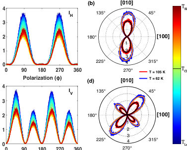
<figcaption class="paper-figure-caption"><b>Fig 2.</b> Fig. 2. RA-SHG measurements on the CoSi (001) surface showing the evolution of the angular response across the CDW transition. The SHG intensity as a function of input polariza- tion angle ϕ is presented for the (a) fixed horizontal analyzer IH, (b) fixed vertical analyzer IV . Panels (c) and (d) show the corresponding polar plots at 105 K (red, T &gt; TCDW ) and 62 K (blue, T &lt; TCDW ), together with global fits to the sur- face symmetry point group (solid black and orange curves). A pronounced change in the angular anisotropy appears below TCDW , signaling the onset of surface ordering.</figcaption>
</figure>
<figure class="paper-figure-card">
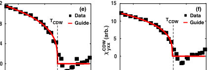
<figcaption class="paper-figure-caption"><b>Fig 3.</b> Fig. 3. Panels (a), (b), (c), and (d) show the background- subtracted temperature-dependent peak SHG intensity for the IH, IV , I∥, and I⊥geometries, respectively, reconstructed using all six surface tensor elements (Supplementary Fig. 3) and evaluated through the expression in Supplementary Sec- tion S3. The transition temperature TCDW ∼90.0 K from the fit is marked by the black dashed lines. Panels (e) and (f) show the temperature dependence of the two dominant sur- face tensor elements, χ(2) xxy and χ(2) yxx, extracted from global fits along with a line to guide the eye.</figcaption>
</figure>
<figure class="paper-figure-card">
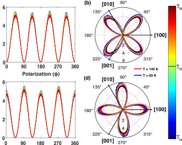
<figcaption class="paper-figure-caption"><b>Fig 4.</b> Fig. 4. Temperature-dependent SHG response of the bulk CoSi over the temperature interval 60–110 K. The SHG in- tensities for the IH and IV channels are shown in panels (a) and (c). The angular plots in panels (b) and (d) are identi- cal above and below TCDW with global fits to Space Group 198, indicating the absence of temperature-driven modifica- tion on this face. Panel (e) shows the peak SHG intensities for IH, IV , I∥and I⊥, offset by ±0.5 for clarity. No significant temperature-driven transition is observed in the bulk SHG re- sponse.</figcaption>
</figure>
<figure class="paper-figure-card">
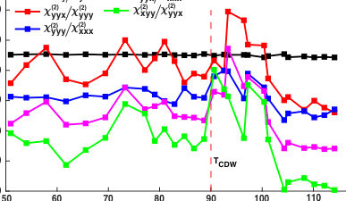
<figcaption class="paper-figure-caption"><b>Fig 5.</b> Fig. 5. Temperature dependence of ratios among the six sur- face tensor elements. The ratio of the two dominant compo- nents, χ(2) xxy/χ(2) yxx (black), remains constant to within a few percent across the entire measured range, including through TCDW , indicating that both components track a common un- derlying quantity. Ratios among the four weak components (χ(2) yyx/χ(2) yyy, χ(2) yyy/χ(2) xxx, χ(2) yyx/χ(2) xxx, and χ(2) xyy/χ(2) yyx) vary only modestly below TCDW but fluctuate more substantially above it.</figcaption>
</figure>
</div>

<p><strong>Summary.</strong> Researchers used RA-SHG spectroscopy on the CoSi surface to study a CDW transition at 90 K. They found the transition follows the 3D XY critical scaling, which is unexpected for a 2D surface. This suggests that the CDW order parameter has an intrinsic 3D character due to coupling with the underlying bulk topology of the Weyl semimetal.</p>
<p><strong>Why it may be interesting.</strong> The finding of 3D XY critical behavior on a 2D surface challenges simple dimensionality arguments in critical phenomena, suggesting that topological coupling can induce higher-dimensional phase coherence.</p>
<details>
<summary>Detailed structure</summary>
<p><strong>Main problem.</strong> To determine the nature and dimensionality of a Charge Density Wave (CDW) instability occurring on the surface of a Weyl Semimetal.</p>
<p><strong>Main result.</strong> The CDW transition exhibits critical behavior consistent with the 3D XY universality class, despite being confined to a nominally two-dimensional surface layer.</p>
<p><strong>Method.</strong> Rotational Anisotropy Second Harmonic Generation (RA-SHG) spectroscopy was used to measure the temperature dependence of the surface nonlinear susceptibility tensor elements.</p>
<p><strong>Model / system.</strong> The study investigates the CoSi (001) surface, a Weyl Semimetal, where the CDW order parameter is probed. The analysis compares the observed critical exponent to theoretical predictions for phase transitions.</p>
<p><strong>Key observables.</strong> Second Harmonic Generation (SHG) intensity, which tracks the CDW order parameter amplitude; the critical exponent $\beta$; and the transition temperature $T_{CDW}$.</p>
<p><strong>Important parameters / regimes.</strong> Critical exponent $\beta = 0.30 \pm 0.03$; Transition temperature $T_{CDW} = 90.0 \pm 0.8$ K; Comparison to 3D XY universality class.</p>
<p><strong>Assumptions / limitations.</strong> The apparent contradiction between 2D surface confinement and 3D XY scaling is resolved by assuming the CDW order parameter possesses an intrinsic three-dimensional structure due to coupling between surface sublayers.</p>
<p><strong>Figures summary.</strong> Figures illustrate the raw RA-SHG data showing anisotropy changes across the transition, and plots detail the temperature dependence of background-subtracted SHG intensity and ratios of tensor elements.</p>
<p><strong>Paper structure.</strong> The paper establishes the experimental setup and the CDW transition using RA-SHG. It then analyzes the temperature scaling of the SHG signal to extract the critical exponent, concluding that the 3D XY class applies due to underlying 3D coupling mechanisms.</p>
</details>
<details>
<summary>Abstract</summary>
<p>Using temperature-dependent rotational anisotropy second harmonic generation (RA-SHG), we identify a charge density wave (CDW) instability on the CoSi (001) face with an onset temperature at $90.0 \pm 0.8$ K. The SHG response tracks the order parameter amplitude, dominated by two nonlinear tensor elements, whose background-subtracted intensity evolves with temperature as a power law. The extracted critical exponent $β= 0.30 \pm 0.03$ is consistent with the 3D XY universality class, an unexpected result for a nominally two-dimensional surface layer. No corresponding anomaly is observed in the bulk response, establishing the transition as a purely surface-driven phase transition. We attribute this unexpected scaling to the coupling between surface Fermi-arc states and the bulk topology they are tied to, grounded in a previously observed intra-unit-cell phase relationship between surface sublayers that gives the order parameter intrinsic three-dimensional structure.</p>
</details>
<p><sub><a href="#top">↑ back to top</a></sub></p>

<p><a id="paper-2608.16992"></a></p>
<h3 id="bulk-criticality-and-boundary-spectra-in-ads-from-matrix-product-states"><a href="http://arxiv.org/abs/2608.16992v1">Bulk Criticality and Boundary Spectra in AdS from Matrix Product States</a></h3>
<p><strong>Authors:</strong> Faizan Bhat<br>
<strong>Type:</strong> theory · <strong>Category:</strong> statistical mechanics · <strong>PDF:</strong> <a href="https://arxiv.org/pdf/2608.16992v1">https://arxiv.org/pdf/2608.16992v1</a><br>
<strong>Analysis basis:</strong> full PDF text, analyzed in chunks
<strong>Topic relevance:</strong> <code>methods for driven-dissipative</code> <strong>3/5</strong> · <code>analog quantum simulation</code> <strong>1/5</strong></p>
<div class="figure-strip-hint">↔ Scroll figures horizontally</div>
<div class="paper-figures-scroll">
<figure class="paper-figure-card">
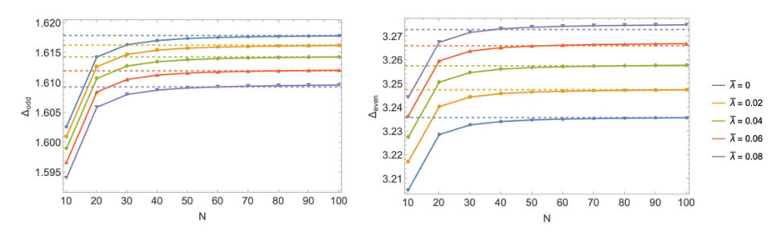
<figcaption class="paper-figure-caption"><b>Fig 1.</b> Figure 1: Convergence in the continuum limit of the lowest Z2-odd (left) and Z2-even (right) boundary scaling dimensions at weak coupling, for ¯m2 = 1. Dashed lines denote the O(¯λ2) perturbative predictions.</figcaption>
</figure>
<figure class="paper-figure-card">
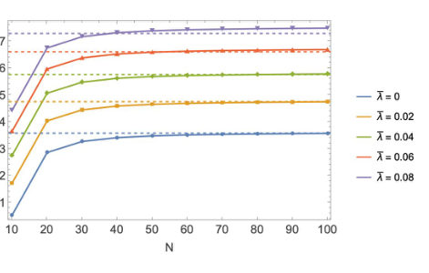
<figcaption class="paper-figure-caption"><b>Fig 2.</b> Figure 1 compares the boundary scaling dimensions extracted from the MPS cal- culation with the perturbative predictions. As the lattice is refined, the numerical results approach the perturbative values in both symmetry sectors. The agreement is already good at moderate N, while the small residual differences at the largest couplings</figcaption>
</figure>
<figure class="paper-figure-card">
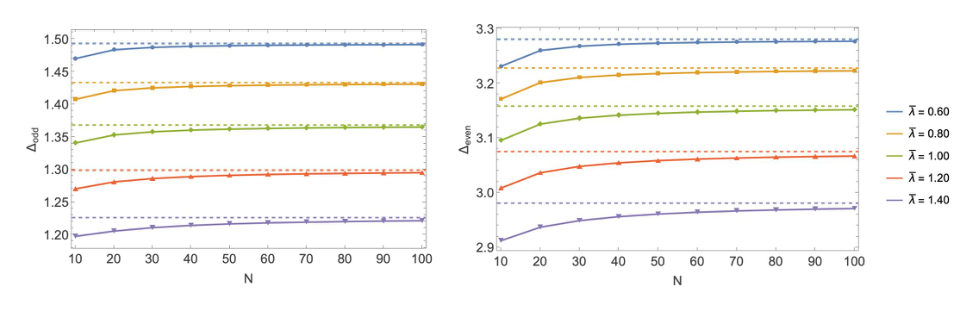
<figcaption class="paper-figure-caption"><b>Fig 3.</b> Figure 2: Convergence in the continuum limit of the lowest Z2-odd (left) and Z2-even (right) boundary scaling dimensions beyond the weak-coupling regime, for ¯m2 = 1. Dashed lines are continuum estimates from the fit ∆(N) = ∆cont + a/N 2.</figcaption>
</figure>
<figure class="paper-figure-card">
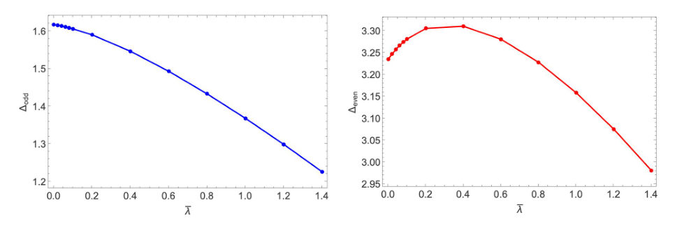
<figcaption class="paper-figure-caption"><b>Fig 4.</b> Figure 3: Lowest Z2-odd (left) and Z2-even (right) boundary scaling dimensions as functions of the quartic coupling ¯λ for ¯m2 = 1.</figcaption>
</figure>
<figure class="paper-figure-card">
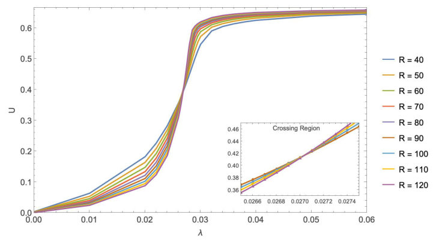
<figcaption class="paper-figure-caption"><b>Fig 5.</b> Figure 4: Binder cumulant U of the central bulk order parameter as a function of the quartic coupling λ for m2 = 0.01 and increasing AdS radius R. The order parameter is measured within |ρ| &lt; R, while the regulated boundaries are placed at ρmax = 5R. The evolution from U ≃0 in the symmetric regime towards U ≃2/3 in the ordered regime becomes increasingly sharp with R. The inset magnifies the crossing region for the largest radii.</figcaption>
</figure>
</div>

<p><strong>Summary.</strong> This paper applies tensor-network methods, specifically Matrix Product States, to study interacting quantum field theories in Anti-de Sitter space. By analyzing the energy spectrum and performing finite-size scaling, the authors non-perturbatively characterize the critical point of $\phi^4$ theory in $ ext{AdS}_2$. This work successfully maps the bulk and boundary physics onto the known 2D Ising universality class.</p>
<p><strong>Why it may be interesting.</strong> The application of tensor networks (MPS) to study critical phenomena in curved spacetime provides a powerful, non-perturbative tool for analyzing strongly correlated quantum systems, bridging condensed matter critical theory with gravity/QFT.</p>
<details>
<summary>Detailed structure</summary>
<p><strong>Main problem.</strong> The study investigates interacting quantum field theories in Anti-de Sitter (AdS) space, focusing on determining bulk criticality and extracting the low-lying boundary spectra.</p>
<p><strong>Main result.</strong> The authors successfully compute boundary scaling dimensions non-perturbatively for $\phi^4$ theory in $    ext{AdS}_2$, locating the bulk $\mathbb{Z}_2$ symmetry-breaking transition consistent with the 2D Ising universality class.</p>
<p><strong>Method.</strong> The research employs a tensor-network approach based on Matrix Product States (MPS) and utilizes finite-size scaling in the AdS radius ($R$) to probe critical behavior.</p>
<p><strong>Model / system.</strong> The system is an interacting scalar quantum field theory, specifically $\phi^4$ theory, formulated in global Anti-de Sitter space ($ ext{AdS}_2$). The Hamiltonian is discretized using a lattice formulation.</p>
<p><strong>Key observables.</strong> Low-lying boundary spectra, bulk energy levels, critical exponents, and central charge.</p>
<p><strong>Important parameters / regimes.</strong> The AdS radius ($R$), the coupling constant ($\lambda$), and the lattice spacing.</p>
<p><strong>Assumptions / limitations.</strong> The use of a lattice Hamiltonian formulation allows for independent variation of the lattice spacing and the AdS radius $R$.</p>
<p><strong>Paper structure.</strong> The paper first establishes the theoretical framework by relating the global AdS spectrum to boundary operators via the bulk-boundary OPE. It then details the lattice discretization of the Hamiltonian and applies the MPS/tensor-network methods to compute spectra and analyze finite-size scaling near critical points.</p>
</details>
<details>
<summary>Abstract</summary>
<p>We study interacting scalar quantum field theories in anti-de Sitter (AdS) space using a tensor-network approach based on matrix product states. We develop methods for extracting low-lying boundary spectra from global-AdS energy levels, probing bulk criticality through finite-size scaling in the AdS radius, and identifying conformal boundary conditions. Applying these methods to scalar $φ^4$ theory in $\mathrm{AdS}_2$, we compute the lowest non-trivial $\mathbb{Z}_2$-odd and even boundary scaling dimensions non-perturbatively. We then locate the bulk $\mathbb{Z}_2$ symmetry-breaking transition and extract critical exponents and central charge consistent with the 2D Ising universality class. At the critical point, we determine the low-lying boundary spectrum and use it to identify the $\mathbb{Z}_2$-preserving free/ordinary Ising conformal boundary condition, thereby characterising both the bulk and boundary universality classes.</p>
</details>
<p><sub><a href="#top">↑ back to top</a></sub></p>

<p><a id="paper-2608.17984"></a></p>
<h3 id="high-harmonicity-planar-penning-traps-for-single-electron-qubits"><a href="http://arxiv.org/abs/2608.17984v1">High-Harmonicity Planar Penning Traps for Single-Electron Qubits</a></h3>
<p><strong>Authors:</strong> Kedar Mal, A. N. Agnihotri, Sugam Kumar, Wolfgang Quint, Manuel Vogel<br>
<strong>Type:</strong> theory · <strong>Category:</strong> other · <strong>PDF:</strong> <a href="https://arxiv.org/pdf/2608.17984v1">https://arxiv.org/pdf/2608.17984v1</a><br>
<strong>Analysis basis:</strong> full PDF text, analyzed in chunks
<strong>Topic relevance:</strong> <code>QC/QI experiment</code> <strong>3/5</strong> · <code>quantum measurements</code> <strong>1/5</strong></p>
<div class="figure-strip-hint">↔ Scroll figures horizontally</div>
<div class="paper-figures-scroll">
<figure class="paper-figure-card">
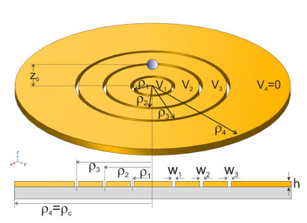
<figcaption class="paper-figure-caption"><b>Fig 1.</b> FIG. 1. Top: Electrode structure of a four-electrode (three- gap) planar Penning trap. A confined electron is indicated in the trap centre at a height z0 above the plane of the electrodes. Bottom: Cross-sectional view. The electrodes are supported by a carrier substrate and are separated by gaps of widths wi and height h for electrical insulation from one another.</figcaption>
</figure>
<figure class="paper-figure-card">
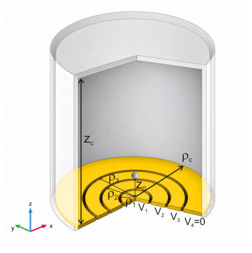
<figcaption class="paper-figure-caption"><b>Fig 2.</b> FIG. 2. Cutout drawing of a four-electrode planar Penning trap like in Fig. 1 with a finite cylindrical electrostatic bound- ary at zero potential with radius ρc and height zc indicated in grey.</figcaption>
</figure>
<figure class="paper-figure-card">
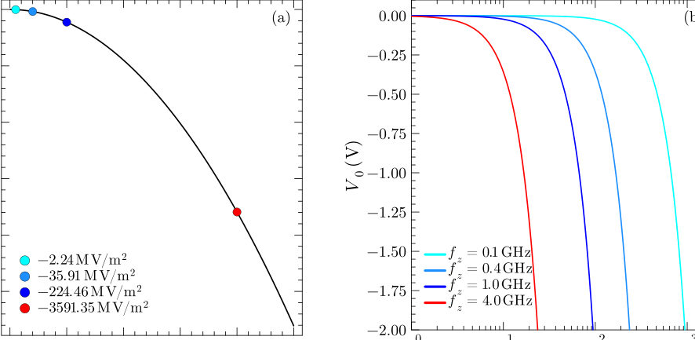
<figcaption class="paper-figure-caption"><b>Fig 3.</b> FIG. 3. (a) Required electrostatic curvature V0/ρ2 1 as a function of the desired axial frequency fz, calculated using Eq. (2). The marked points correspond to axial frequencies of 0.1, 0.4, 1.0, and 4.0 GHz, respectively. (b) Required trap depth V0 as a function of the trap size ρ1 for the corresponding axial frequencies.</figcaption>
</figure>
<figure class="paper-figure-card">
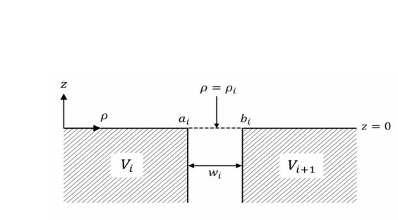
<figcaption class="paper-figure-caption"><b>Fig 4.</b> FIG. 4. Schematic of the ith electrode gap of width wi, cen- tered at radius ρ = ρi.</figcaption>
</figure>
<figure class="paper-figure-card">
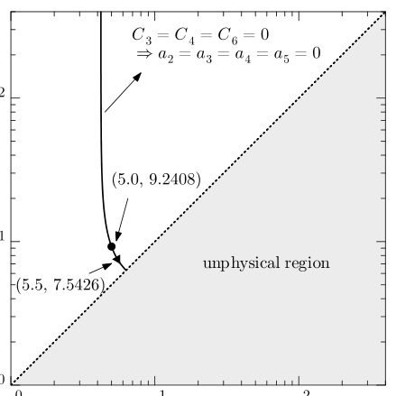
<figcaption class="paper-figure-caption"><b>Fig 5.</b> FIG. 5. Optimized geometry for a three-gap planar trap with ˜ρ1 = 1, ˜wi = 0, and ˜ρc = ˜zc = ∞, satisfying a2 = a3 = a4 = a5 = 0. The circle marks the parameter set used for detailed analysis, while the triangle indicates the optimized parameters used in [14].</figcaption>
</figure>
</div>

<p><strong>Summary.</strong> This paper details the theoretical design of planar Penning traps intended for single-electron qubits. The authors develop advanced analytical and simulation techniques to ensure the trapping potential is highly harmonic, which is crucial for stable quantum operations. They conclude that a specific four-electrode geometry is required to overcome the limitations of smaller, microfabricated traps.</p>
<p><strong>Why it may be interesting.</strong> This work directly addresses the engineering challenges of realizing solid-state or microfabricated quantum hardware by providing rigorous theoretical guidelines for optimizing trap potentials for single-electron qubits.</p>
<details>
<summary>Detailed structure</summary>
<p><strong>Main problem.</strong> The primary goal is to design planar Penning traps that maintain a highly harmonic confining potential for single-electron qubits used in quantum information processing.</p>
<p><strong>Main result.</strong> The authors demonstrate that a four-electrode, three-gap planar trap geometry is necessary and sufficient to achieve the required harmonicity, even when accounting for finite electrode gaps and boundaries.</p>
<p><strong>Method.</strong> The work combines fully analytic derivations of the electrostatic potential with detailed comparison against finite-element simulations to optimize trap geometry and electrode voltages.</p>
<p><strong>Model / system.</strong> The system is a planar Penning trap confining a single electron using a combination of a magnetic field and voltages on concentric electrodes. The potential is modeled by superimposing contributions from these electrodes, requiring careful treatment of finite gaps and boundaries.</p>
<p><strong>Key observables.</strong> Harmonicity of the axial potential, axial oscillation frequency ($\omega_z$), and the thermally induced frequency width ($\sigma_f$).</p>
<p><strong>Important parameters / regimes.</strong> Millimetre size scale and below (sub-mm), requiring consideration of relative gap sizes; the trap must be optimized to ensure $\sigma_f \ll \gamma_z$.</p>
<p><strong>Assumptions / limitations.</strong> The analysis assumes the potential can be modeled by analyzing contributions from individual electrodes, and that the trap can be optimized to minimize anharmonicities despite the planar geometry's inherent limitations compared to 3D traps.</p>
<p><strong>Figures summary.</strong> Figures illustrate the geometry of the four-electrode planar Penning trap, its cross-section, and the relationship between required electrostatic curvature, trap depth, and desired axial frequency.</p>
<p><strong>Paper structure.</strong> The paper progresses by establishing the need for high harmonicity, developing the theoretical framework for planar traps with finite gaps, showing that simple designs fail, and finally presenting the optimization procedure using analytic and simulation methods to achieve stable confinement.</p>
</details>
<details>
<summary>Abstract</summary>
<p>We present a detailed account of the design choices required for planar Penning traps that feature a highly harmonic confining potential. High harmonicity is indispensable for a number of applications, particularly for confinement of single electrons as qubits in quantum-information processing. The present work extends previous studies [D. Goldmann and G. Gabrielse, Phys. Rev. A 81, 052335 (2010)] by a fully analytic treatment of finite electrode gaps and their relevance for small traps on the millimetre size scale and below, when relative gap sizes are non-negligible. We derive the overall trap potential with a particular focus on different models of finite-gap potentials and show how to find the optimum trap geometry and electrode voltages to minimize anharmonicities. The analytic calculations are compared with detailed finite-element simulations.</p>
</details>
<p><sub><a href="#top">↑ back to top</a></sub></p>

<p><a id="paper-2608.17473"></a></p>
<h3 id="universal-quantum-corrections-of-two-body-correlation-in-a-weakly-interspecies-interacting-binary-bose-mixture"><a href="http://arxiv.org/abs/2608.17473v1">Universal quantum corrections of two-body correlation in a weakly interspecies interacting binary Bose mixture</a></h3>
<p><strong>Authors:</strong> Rui-Yan Chen, Zhaoxin Liang, Gao Xianlong<br>
<strong>Type:</strong> theory · <strong>Category:</strong> quantum gases · <strong>PDF:</strong> <a href="https://arxiv.org/pdf/2608.17473v1">https://arxiv.org/pdf/2608.17473v1</a><br>
<strong>Analysis basis:</strong> full PDF text, analyzed in chunks
<strong>Topic relevance:</strong> <code>Keldysh / 2PI / non-Gaussian methods</code> <strong>3/5</strong> · <code>analog quantum simulation</code> <strong>1/5</strong></p>
<div class="figure-strip-hint">↔ Scroll figures horizontally</div>
<div class="paper-figures-scroll">
<figure class="paper-figure-card">
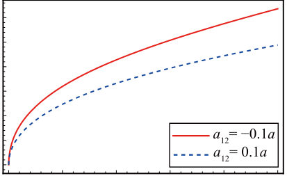
<figcaption class="paper-figure-caption"><b>Fig 1.</b> FIG. 2. Quantum depletion fraction nex/n as a function of the total density n for a12 = −0.1a and a12 = 0.1a. Parameters and units are the same as in Fig. 1.</figcaption>
</figure>
<figure class="paper-figure-card">
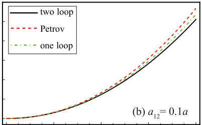
<figcaption class="paper-figure-caption"><b>Fig 2.</b> FIG. 1. Energy density E as a function of the total particle density n for (a) a12 = −0.1a and (b) a12 = 0.1a, with m1 = m2 = m, a11 = a22 = a, and n1 = n2 = n/2. Our one- loop and two-loop results are compared with Petrov’s one- loop theory [12]. The curves are labeled in the figure. E is in units of 10−4ℏ2/(2ma5) and n in units of 10−3a−3.</figcaption>
</figure>
<figure class="paper-figure-card">
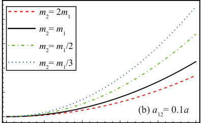
<figcaption class="paper-figure-caption"><b>Fig 3.</b> FIG. 3. Energy density as a function of the total density n for different mass ratios r = m2/m1 = 2, 1, 1/2, and 1/3 (as labeled in the figure), with (a) a12 = −0.1a and (b) a12 = 0.1a. Other parameters are as in Fig. 1. The curves confirm the scaling identity (61): E(r) = (1+1/r)E(1)/2. E is in units of 10−4ℏ2/(2m1a5) and n in units of 10−3a−3.</figcaption>
</figure>
</div>

<p><strong>Summary.</strong> This theoretical paper calculates the universal quantum corrections to two-body correlations in a weakly interacting binary Bose mixture using the CJT effective action formalism. By employing a saddle-point approximation, the authors derive the energy density as a low-density expansion, showing that the mixture's corrections map simply to single-component results. The theory successfully reproduces known equations of state and analyzes the impact of mass imbalance on the system's energy.</p>
<p><strong>Why it may be interesting.</strong> This work provides a highly rigorous, analytical framework for calculating quantum corrections in multi-component quantum gases, extending established results like the LHY corrections to mixtures and providing insights into mass imbalance effects.</p>
<details>
<summary>Detailed structure</summary>
<p><strong>Main problem.</strong> The paper investigates the universal quantum corrections to two-body correlations in a weakly interacting binary Bose mixture at zero temperature.</p>
<p><strong>Main result.</strong> The universal quantum corrections map simply to the single-component case, evaluated using an effective scattering length $\delta a_\sigma = a_{\sigma\sigma} - a_{12}$. The theory successfully reproduces known results like Petrov's EOS and yields beyond-Lee-Huang-Yang corrections.</p>
<p><strong>Method.</strong> The authors employ the Cornwall-Jackiw-Tomboulis (CJT) two-particle-irreducible effective action formalism, utilizing a saddle-point approximation on the interspecies coupling via Hubbard-Stratonovich transformations.</p>
<p><strong>Model / system.</strong> The system is a zero-temperature binary Bose mixture, modeled by an action involving intra-species ($g_1, g_2$) and interspecies ($g_{12}$) couplings. The analysis is performed in the weak interspecies-coupling regime.</p>
<p><strong>Key observables.</strong> Ground-state energy density, quantum depletion, and chemical potentials.</p>
<p><strong>Important parameters / regimes.</strong> Weak interspecies-coupling regime ($|a_{12}| \ll |a_{11}|, |a_{22}|$), low-density expansion, and mass imbalance ratio ($m_1/m_2$).</p>
<p><strong>Assumptions / limitations.</strong> The primary assumption is the validity of the saddle-point approximation for the interspecies field, which restricts the analysis to the weak-coupling limit.</p>
<p><strong>Figures summary.</strong> Figure 3 illustrates the energy density $E$ dependence on total density $n$ for various mass ratios, confirming the predicted scaling identity $E(r) = (1+1/r)E(1)/2$.</p>
<p><strong>Paper structure.</strong> The paper develops the theory by first applying Hubbard-Stratonovich transformations and performing a saddle-point treatment. It then calculates the energy density via a two-loop expansion, deriving the single-component mapping and analyzing the scaling behavior due to mass imbalance.</p>
</details>
<details>
<summary>Abstract</summary>
<p>We investigate universal quantum corrections to two-body correlations in a zero-temperature binary Bose mixture using the Cornwall-Jackiw-Tomboulis two-particle-irreducible effective action formalism. In the weak interspecies-coupling regime, a saddle-point treatment based on Hubbard-Stratonovich transformations can be combined with a two-loop expansion and a gapless Hartree-Fock correction, thereby preserving the Goldstone theorem and reducing the coupled two-component problem to two analytically solvable single-component theories. Within this framework, we derive the ground-state energy density as a low-density expansion in the gas parameter, together with the quantum depletion and chemical potentials. The results exhibit a simple mapping to the single-component case: the universal quantum corrections of the mixture are obtained by evaluating the known single-component series at an effective scattering length $a_{σσ}-a_{12}$ for each species, where $a_{σσ}$ and $a_{12}$ are the intra- and interspecies $s$-wave scattering lengths. This reproduces Petrov's equation of state at one-loop order in the weak-coupling limit and yields beyond-Lee-Huang-Yang corrections at two-loop order. We also analyze the role of mass imbalance, which enters the energy density through the exact rescaling factor $(1+m_{1}/m_{2})/2$.</p>
</details>
<p><sub><a href="#top">↑ back to top</a></sub></p>

<p><a id="paper-2608.17870"></a></p>
<h3 id="computationally-efficient-optimization-of-per-qubit-clifford-deformation-for-non-uniform-biased-noise"><a href="http://arxiv.org/abs/2608.17870v1">Computationally Efficient Optimization of Per-Qubit Clifford Deformation for Non-uniform Biased Noise</a></h3>
<p><strong>Authors:</strong> Won Joon Yun, Andrew Nemec, Jonathan M. Baker<br>
<strong>Type:</strong> theory · <strong>Category:</strong> quantum information and computing · <strong>PDF:</strong> <a href="https://arxiv.org/pdf/2608.17870v1">https://arxiv.org/pdf/2608.17870v1</a><br>
<strong>Analysis basis:</strong> full PDF text, analyzed in chunks
<strong>Topic relevance:</strong> <code>QC/QI experiment</code> <strong>3/5</strong></p>
<div class="figure-strip-hint">↔ Scroll figures horizontally</div>
<div class="paper-figures-scroll">
<figure class="paper-figure-card">
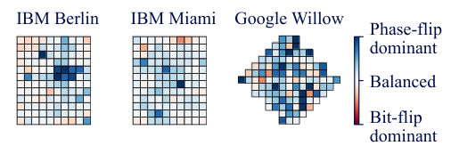
<figcaption class="paper-figure-caption"><b>Fig 1.</b> Fig. 1. Per-qubit bit-flip/phase-flip bias, mapped onto the real qubit layout of each device. The imbalance is spatially non-uniform on every device, so no single global deformation fits it.</figcaption>
</figure>
<figure class="paper-figure-card">
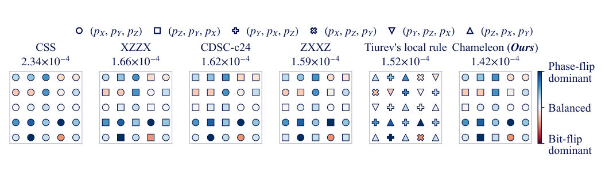
<figcaption class="paper-figure-caption"><b>Fig 2.</b> Fig. 2. Comparison of six policies on a sampled map from Google Willow calibration data, surface code with distance 5. Values indicate LER. CDSC-c24 means CDSC validated with 24 candidates [13]. Our proposed method achieves the lowest LER without any decoder validation.</figcaption>
</figure>
<figure class="paper-figure-card">
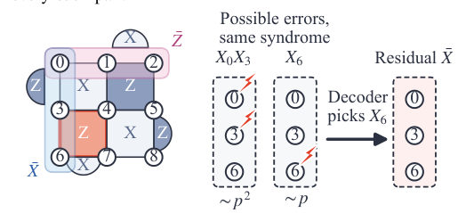
<figcaption class="paper-figure-caption"><b>Fig 3.</b> Fig. 3. The decoding ambiguity on the distance-3 rotated surface code. On the left, the code carries the logical ¯Z and ¯ X, where dark plaquettes are Z- type checks, light plaquettes are X-type checks, and orange marks triggered Z-type checks. On the right, the two-qubit error X0X3 (probability ∼p2) and the single-qubit error X6 (∼p) trigger exactly the same checks. The decoder picks the likelier X6, and when the true error is X0X3, the residual is the logical ¯ X. No decoder can avoid this failure; deformation can suppress it.</figcaption>
</figure>
<figure class="paper-figure-card">
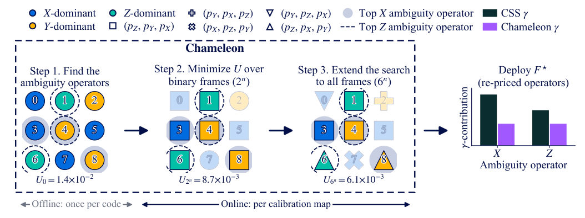
<figcaption class="paper-figure-caption"><b>Fig 4.</b> Fig. 4. Overview of CHAMELEON, the compile-time pass on one synthetic mixed-bias d=3 map (η=10, p=0.005). It takes the per-qubit noise map and the code as input. Step 1 finds the ambiguity operators of the undeformed code, and only the likeliest X and Z operators are drawn for legibility, a cost paid once and independent of the calibration map. Step 2 minimizes U, an approximation to a bound on the LER, over the binary space (2n). Step 3 extends to the full frame space (6n) with the cross-entropy method, reducing the bound to U6n. The optimized frame F ⋆is then deployed without decoder validation.</figcaption>
</figure>
<figure class="paper-figure-card">

<figcaption class="paper-figure-caption"><b>Fig 5.</b> Fig. 5. Surrogate U vs. measured worst-axis LER for 35 frames per cell (4 fixed baselines, the deployed CHAMELEON frame, and 30 random full frames), at code capacity with p=0.02 and ≥256 ambiguity events per frame. Columns are ordered by the bias strength of the map (fraction of qubits with ηq&gt;1.5, from left to right 6, 13, 43, 67%). Surrogate fidelity rises with bias. On the least-biased map (Miami) the surface-code frames are a near-flat tie and ranking is noise-dominated, while on BB36 ρ reaches 0.84–0.98 on every map, and CHAMELEON lands in the lowest-U, lowest-LER corner of every panel.</figcaption>
</figure>
</div>

<p><strong>Summary.</strong> This paper introduces Chameleon, a fast compiler designed to optimize Clifford deformations for quantum error correction codes operating under realistic, biased noise. By replacing intractable full simulations with an analytical upper bound on failure probabilities, it efficiently finds optimal noise mitigation strategies. This significantly improves the achievable logical error rates while making the optimization process computationally feasible for real-world hardware constraints.</p>
<p><strong>Why it may be interesting.</strong> While focused on superconducting qubits, the development of a fast, general-purpose compiler for optimizing error correction protocols against realistic, non-i.i.d. noise is highly relevant for any field utilizing quantum computation, including AMO platforms.</p>
<details>
<summary>Detailed structure</summary>
<p><strong>Main problem.</strong> The primary goal is to reduce the Logical Error Rate (LER) in fault-tolerant quantum computing when physical qubits suffer from non-uniform, biased noise.</p>
<p><strong>Main result.</strong> The proposed compiler, Chameleon, achieves significant LER reductions (e.g., 19% for surface codes) while drastically reducing classical computation time from days to minutes.</p>
<p><strong>Method.</strong> It employs a novel compiler that approximates the LER using an analytical upper bound on ambiguity operators, avoiding computationally prohibitive full simulations.</p>
<p><strong>Model / system.</strong> The work models superconducting quantum hardware subject to spatially non-uniform Pauli noise (X/Z bias). It applies to general Quantum Error Correction (QEC) codes like the surface code, color code, and BB72 code.</p>
<p><strong>Key observables.</strong> Logical Error Rate (LER), correlation coefficient ($
ho$) between the surrogate score and actual LER, and classical computation time.</p>
<p><strong>Important parameters / regimes.</strong> Noise bias ($\eta_q$), code distance ($d$), and the specific structure of the error-correcting code used.</p>
<p><strong>Assumptions / limitations.</strong> The method relies on approximating the true LER using an analytical upper bound derived from the ambiguity operators, assuming this bound strongly preserves the ranking of candidate deformations.</p>
<p><strong>Figures summary.</strong> Figures illustrate the non-uniform noise bias on a device layout and compare LER reduction achieved by Chameleon against other policies on a sampled map for a surface code.</p>
<p><strong>Paper structure.</strong> The paper introduces the problem of biased noise in QEC, details the limitations of existing global/local deformation techniques, proposes the Chameleon compiler using an analytic surrogate objective, and validates its performance across multiple code families and noise models.</p>
</details>
<details>
<summary>Abstract</summary>
<p>In fault-tolerant quantum computing systems with biased noise, Clifford deformation can substantially reduce the logical error rate (LER) without additional physical hardware overhead, such as extra qubits, syndrome extraction rounds, or code distance. Although Google Willow calibration data shows that $43\%$ of qubits exhibit strong $X/Z$ bias, existing calibration-aware deformation techniques remain impractical: (1) global searches over the $6^n$ deformation choices rely on computing-intensive simulations, and (2) local heuristics often underperform undeformed baselines.   We present Chameleon, a fast, high-performance, and code-agnostic Clifford deformation compiler. We utilize our approximation to tackle a deformation problem based on an analytical bound on the LER. By minimizing this surrogate, Chameleon finds an optimized deformation that empirically reduces the LER with substantially lower computational overhead. In our evaluation, using calibration models derived from real superconducting devices, Chameleon demonstrates that improvements in our surrogate are strongly correlated with actual LER reductions, with an average rank correlation of $ρ=0.8$ and $ρ=0.89$-$0.94$ on the most strongly biased system. It also reduces classical computational time from $1.2$ days to $3.1$ minutes for the BB72 code. Chameleon achieves maximum LER reductions of $19\%$ ($13\%$ on average) for surface codes, $16\%$ ($7\%$) for color codes, and $10\%$ ($4\%$) for bivariate bicycle codes relative to competing baselines. The maximum gains for all code families are observed on the most strongly biased system.</p>
</details>
<p><sub><a href="#top">↑ back to top</a></sub></p>

<p><a id="paper-2608.17817"></a></p>
<h3 id="frustration-without-glass-in-non-abelian-simplicial-networks"><a href="http://arxiv.org/abs/2608.17817v1">Frustration without Glass in Non-Abelian Simplicial Networks</a></h3>
<p><strong>Authors:</strong> Xuanhua Wang<br>
<strong>Type:</strong> theory · <strong>Category:</strong> disordered systems and neural networks · <strong>PDF:</strong> <a href="https://arxiv.org/pdf/2608.17817v1">https://arxiv.org/pdf/2608.17817v1</a><br>
<strong>Analysis basis:</strong> full PDF text, analyzed in chunks
<strong>Topic relevance:</strong> <code>analog quantum simulation</code> <strong>3/5</strong></p>
<div class="figure-strip-hint">↔ Scroll figures horizontally</div>
<div class="paper-figures-scroll">
<figure class="paper-figure-card">

<figcaption class="paper-figure-caption"><b>Fig 1.</b> FIG. 1. Continuous disorder-driven loss of global compatibility at J0 = 1 and β = 6. (a) Gauge-invariant order parameter MP as a function of disorder strength. (b) Binder cumulant U4, showing a common crossing within the window ∆c ≃0.44 ± 0.01. (c) Connected thermal susceptibility of the plaquettes χP,con, whose maximum grows and peak width shrinks with the system size. Error bars represent disorder-resolved statistical uncertainties.</figcaption>
</figure>
<figure class="paper-figure-card">

<figcaption class="paper-figure-caption"><b>Fig 2.</b> FIG. 2. Gauge-invariant characterization of the high-disorder phase. (a) Replica overlaps, width and sample-to-sample variance VarJ(qc) for N = 30. (b) G2 adj versus ∆for three sizes. (c) The finite-size analysis of G2 adj at representative ∆= 0.6. The approximate N −1 scaling is consistent with Iadj ∼3NCadj remaining a finite value at ∆&gt; ∆c. (d) Local thermal variance of plaquettes rises sharply with disorder. Parameters used for J0 and β are identical to those in Figure 1.</figcaption>
</figure>
</div>

<p><strong>Summary.</strong> This work analyzes a non-Abelian gauge network subjected to quenched frustration, modeling structural consistency via plaquette holonomies. By analyzing key correlation measures, the authors demonstrate that the system enters a non-glassy correlated liquid phase rather than freezing into a spin-glass state. This suggests that collective order can persist through geometric dilution of local correlations.</p>
<p><strong>Why it may be interesting.</strong> The concept of a 'correlated gauge liquid' provides a novel theoretical framework for understanding collective organization in highly frustrated systems, moving beyond standard spin-glass paradigms.</p>
<details>
<summary>Detailed structure</summary>
<p><strong>Main problem.</strong> The paper investigates the collective phase that emerges in systems with non-Abelian holonomies when subjected to quenched, mutually frustrating couplings, aiming to distinguish this from conventional glassy freezing.</p>
<p><strong>Main result.</strong> Dense frustration leads to a non-glassy correlated gauge liquid, characterized by a finite integrated correlation weight despite the geometric dilution of individual pair correlations.</p>
<p><strong>Method.</strong> The study employs theoretical formulation of non-Abelian gauge networks and utilizes advanced numerical techniques like parallel-tempering simulations and replica overlap analysis.</p>
<p><strong>Model / system.</strong> The model is a non-Abelian gauge network defined on an oriented simplicial 2-complex, where link transformations belong to a group like SU(2). The dynamics are governed by a Hamiltonian involving Wilson plaquette observables with quenched random couplings.</p>
<p><strong>Key observables.</strong> Global compatibility ($m_P$), connected adjacent correlation weight ($I_{	ext{adj}}$), and connected replica-overlap width ($W_c$).</p>
<p><strong>Important parameters / regimes.</strong> High-disorder phase, quenched random couplings ($J_f$), and the system size ($N$).</p>
<p><strong>Assumptions / limitations.</strong> The analysis focuses on the SU(2) model on the complete simplicial 2-complex, and the interpretation relies on distinguishing between different types of correlation decay.</p>
<p><strong>Figures summary.</strong> Figures illustrate the continuous disorder-driven loss of global compatibility, the finite nature of $I_{	ext{adj}}$ in the high-disorder phase, and the vanishing of replica overlap width, confirming the non-glassy liquid state.</p>
<p><strong>Paper structure.</strong> The paper builds by defining the gauge network and Hamiltonian, then analyzing the behavior of key observables ($m_P, I_{	ext{adj}}, W_c$) across different disorder regimes to rule out glassy freezing and establish the correlated liquid phase.</p>
</details>
<details>
<summary>Abstract</summary>
<p>We formulate a non-Abelian theory of structural consistency for systems in which dynamical transformations reside on the links of a simplicial network. Gauge covariance follows from freedom to choose local representation frames, while plaquette holonomies quantify the incompatibility of alternative paths. For an SU(2) model on the complete simplicial $2$-complex with quenched random plaquette couplings, parallel-tempering simulations reveal a continuous disorder-driven loss of global compatibility. In the high-disorder phase, the uniform compatibility $M_P$ decreases with system size, the integrated adjacent correlation weight $\mathcal I_{\mathrm{adj}}$ remains finite value. Moreover, the connected replica-overlap width approaches the numerical noise floor and its distribution narrows, providing no evidence for thermodynamic replica-symmetry breaking. Dense frustration therefore produces a non-glassy correlated gauge liquid in which individual pair correlations are geometrically diluted while a finite integrated correlation weight survives.</p>
</details>
<p><sub><a href="#top">↑ back to top</a></sub></p>

<p><a id="paper-2608.17136"></a></p>
<h3 id="gate-level-implementation-and-resource-analysis-of-lackadaisical-quantum-walk-search"><a href="http://arxiv.org/abs/2608.17136v1">Gate-level Implementation and Resource Analysis of Lackadaisical Quantum Walk Search</a></h3>
<p><strong>Authors:</strong> Amit Saha, Debanjan Kola, Nishanka Das, Amlan Chakrabarti<br>
<strong>Type:</strong> both · <strong>Category:</strong> quantum information and computing · <strong>PDF:</strong> <a href="https://arxiv.org/pdf/2608.17136v1">https://arxiv.org/pdf/2608.17136v1</a><br>
<strong>Analysis basis:</strong> full PDF text, analyzed in chunks
<strong>Topic relevance:</strong> <code>QC/QI experiment</code> <strong>3/5</strong></p>
<div class="figure-strip-hint">↔ Scroll figures horizontally</div>
<div class="paper-figures-scroll">
<figure class="paper-figure-card">

<figcaption class="paper-figure-caption"><b>Fig 1.</b> Fig. 2. Lackadaisical quantum walks on a 5 × 5 grid. Every vertex carries a self-loop of weight ℓ. The double- circled vertex denotes the marked vertex.</figcaption>
</figure>
<figure class="paper-figure-card">

<figcaption class="paper-figure-caption"><b>Fig 2.</b> Fig. 4. Shift operator circuits for the discrete-time quantum walks on a 3-qubit position register. 𝑆+ increments the position by 1 when |𝑐𝑜𝑖𝑛⟩= |1⟩; 𝑆−decrements by 1 when |𝑐𝑜𝑖𝑛⟩= |0⟩.</figcaption>
</figure>
<figure class="paper-figure-card">

<figcaption class="paper-figure-caption"><b>Fig 3.</b> Fig. 6. Complete circuit design of the lackadaisical quantum walks on an 𝐿×𝐿grid, showing state initialization, the walk operator repeated for 𝑡iterations (coin, phase oracle, and flip-flop shift operations), and final measurement of the vertex qubits.</figcaption>
</figure>
<figure class="paper-figure-card">

<figcaption class="paper-figure-caption"><b>Fig 4.</b> Fig. 7. Gate-level implementation of the flip-flop shift operator for an 8 × 8 lackadaisical quantum walk. The circuit uses three-qubit 𝑋𝑝and 𝑌𝑝position registers and a three-qubit coin register. Directional coin states are sequentially mapped to the active state |111⟩𝑐to control the corresponding spatial shift, followed by a flip-flop update that reverses the movement direction while preserving the self-loop state.</figcaption>
</figure>
<figure class="paper-figure-card">

<figcaption class="paper-figure-caption"><b>Fig 5.</b> Fig. 8. Ideal noiseless results for an 8 × 8 grid with a single marked vertex.</figcaption>
</figure>
</div>

<p><strong>Summary.</strong> This paper provides a comprehensive gate-level implementation framework for Lackadaisical Quantum Walk search, bridging the gap between theory and hardware. The authors detail the circuit construction, validate its performance under noise, and rigorously analyze the required quantum resources using both logical and fault-tolerant estimates. This work establishes a practical roadmap for testing advanced quantum search algorithms on superconducting quantum hardware.</p>
<p><strong>Why it may be interesting.</strong> This work is highly relevant as it translates an abstract quantum algorithm into concrete, resource-quantified circuit blueprints, which is the necessary step for experimental realization on near-term quantum processors.</p>
<details>
<summary>Detailed structure</summary>
<p><strong>Main problem.</strong> The paper addresses the gap between the theoretical advantages of Lackadaisical Quantum Walks (LQW) and their practical, gate-level realization for execution on current quantum hardware.</p>
<p><strong>Main result.</strong> They provide a complete, validated gate-level circuit construction for LQW search and perform detailed resource analyses, quantifying the required qubits and gate counts for scaling up to large grids.</p>
<p><strong>Method.</strong> The authors developed a gate-level framework by encoding the walk dynamics using oracle, coin, and flip-flop shift operations, validating the circuit under both ideal and realistic noisy superconducting hardware models.</p>
<p><strong>Model / system.</strong> The model is the Lackadaisical Quantum Walk (LQW) on a 2D grid, which extends standard quantum walks by incorporating weighted self-loops to enhance search localization. The implementation is mapped onto a qubit register structure suitable for superconducting quantum hardware.</p>
<p><strong>Key observables.</strong> Search success probability, algorithmic register size (9 to 15 qubits), transpiled gate count ($3.63	imes10^{5}$ to $4.38	imes10^{6}$), and circuit depth.</p>
<p><strong>Important parameters / regimes.</strong> Self-loop weight ($\ell$), grid size ($8	imes8$ to $64	imes64$), physical error rate ($p=10^{-3}$), and code distance for surface-code analysis.</p>
<p><strong>Assumptions / limitations.</strong> The physical resource analysis assumes a surface-code model and relies on the decomposability of multi-controlled gates into native one- and two-qubit gates.</p>
<p><strong>Figures summary.</strong> Figures illustrate the 1D and 2D walk structures, basic coin circuits, and the circuit components (increment/decrement) used for the position register.</p>
<p><strong>Paper structure.</strong> The paper progresses from defining the LQW model and its theoretical benefits, to presenting the explicit gate-level circuit construction, validating it under noise, and concluding with detailed logical and fault-tolerant physical resource estimations.</p>
</details>
<details>
<summary>Abstract</summary>
<p>Lackadaisical quantum walks (LQW) extend discrete-time quantum walks (DTQW) by introducing weighted self-loops, enabling improved spatial-search performance through controlled localization of the walker. Although their theoretical properties and algorithmic advantages have been studied extensively, practical gate-level realizations suitable for execution on quantum hardware remain largely unexplored. This gap limits the assessment of lackadaisical quantum walk search under realistic architectural constraints, noise processes, and resource requirements. In this work, we present a gate-level implementation framework for lackadaisical quantum walk search. The proposed construction encodes the position and coin spaces into qubit registers, and realizes the walk dynamics through oracle, coin, and flip-flop shift operations. We validate the circuit by reproducing the expected search behavior for single and multiple marked vertices and by analyzing the effect of the self-loop weight on the success probability. We further evaluate the implementation under realistic noisy settings using superconducting hardware's noise models and apply noise-mitigation techniques to improve the measured search performance. Logical-resource analysis shows that, for grids ranging from $8\times8$ to $64\times64$, the algorithmic register increases from 9 to 15 qubits, while the transpiled gate count increases from $3.63\times10^{5}$ to $4.38\times10^{6}$ and the circuit depth from $2.13\times10^{5}$ to $2.56\times10^{6}$. Finally, fault-tolerant resource estimates based on a surface-code model using the Microsoft Quantum Resource Estimator demonstrate the substantial space-time trade-off associated with magic-state production.</p>
</details>
<p><sub><a href="#top">↑ back to top</a></sub></p>

<p><a id="paper-2608.17631"></a></p>
<h3 id="gauge-constrained-spinon-complexes-near-deconfined-quantum-criticality"><a href="http://arxiv.org/abs/2608.17631v1">Gauge-constrained Spinon Complexes Near Deconfined Quantum Criticality</a></h3>
<p><strong>Authors:</strong> Zhi-Yao Ning, Xue-Feng Zhang, Naoki Kawashima, Jun Takahashi<br>
<strong>Type:</strong> theory · <strong>Category:</strong> other · <strong>PDF:</strong> <a href="https://arxiv.org/pdf/2608.17631v1">https://arxiv.org/pdf/2608.17631v1</a><br>
<strong>Analysis basis:</strong> full PDF text, analyzed in chunks
<strong>Topic relevance:</strong> <code>analog quantum simulation</code> <strong>3/5</strong></p>
<div class="figure-strip-hint">↔ Scroll figures horizontally</div>
<div class="paper-figures-scroll">
<figure class="paper-figure-card">

<figcaption class="paper-figure-caption"><b>Fig 1.</b> FIG. 1. Left: Representative spinon texture in the VBS phase, exhibiting a 2π winding of ϕVBS. It is calculated on a odd-size square lattice with OBC, which has a natural un- paired spin as spinon. Right: Cyclic color map used to visu- alize the local VBS angle.</figcaption>
</figure>
<figure class="paper-figure-card">

<figcaption class="paper-figure-caption"><b>Fig 2.</b> FIG. 2. Two-pinned-spinon dipole. (a) Two-pin excitation energy ∆E2pin(d) obtained by varying d. The blue curve is a fit to the pre-breaking regime using Eq. (4) within the fitting window d = 1–15, giving σ ≲0.001 and α = −0.788 ± 0.0014. Real-space VBS textures show (b) the broken and (c) the unbroken configuration. Red and black filled circles mark the pair of pinned spins with matched quantum numbers, whereas open circles mark the emergent spinons created by string breaking.</figcaption>
</figure>
<figure class="paper-figure-card">

<figcaption class="paper-figure-caption"><b>Fig 3.</b> FIG. 4. Domain-wall networks generated by multi-spinon pinning. (Left) regular 6 × 6 array of pinned spinons with spacing d = 11 produces a clean VBS domain-wall network. (Right) distorted 8 × 8 array with smaller spacing d = 7. The four frames mark representative perturbations, including (A) spinons displacement, (B) local dilution, (C) δr = (1, 1) displacement, and (D) δr = (2, 2) displacement. These per- turbations deform or locally reconnect nearby strings but do not destroy the global domain-wall network.</figcaption>
</figure>
<figure class="paper-figure-card">

<figcaption class="paper-figure-caption"><b>Fig 4.</b> FIG. 3. Four-pinned-spinon quadrupole. (a) Four-pin ex- citation energy ∆E4pin(dy) obtained by fixing dx = 7 and varying dy. The blue curve is a fit to the pre-breaking form in Eq. (4) over the window dy = 1–23, giving σ ≲0.001 and α = −1.445 ± 0.002. Panels (b) and (c) show real-space VBS textures for representative four-pin configurations. The con- nected quadrupole remains visible when the pinned spinons are rotated with respect to the quadrupole center, as shown in (c).</figcaption>
</figure>
</div>

<p><strong>Summary.</strong> This work uses quantum Monte Carlo simulations on quantum magnets to study confinement in the Valence Bond Solid (VBS) phase near a quantum critical point. By introducing controlled spinon defects, the authors provide energetic and real-space evidence for string breaking, demonstrating that the complex organization of these spinon complexes is governed by both quantum numbers and underlying lattice geometry.</p>
<p><strong>Why it may be interesting.</strong> The work provides a concrete, measurable analogy to gauge theories (like QCD) using condensed matter systems, offering insights into confinement mechanisms that are highly relevant to strongly correlated electron physics.</p>
<details>
<summary>Detailed structure</summary>
<p><strong>Main problem.</strong> The paper investigates the nature of confinement and gauge-constrained structures, specifically string breaking, in quantum magnets near a Deconfined Quantum Critical Point (DQCP).</p>
<p><strong>Main result.</strong> String breaking is confirmed by the saturation of the excitation energy ($\Delta E$) at large separations, and the analysis establishes pinned defects as a controllable tool for resolving multi-spinon structures in a VBS phase.</p>
<p><strong>Method.</strong> The study employs Quantum Monte Carlo (QMC) simulations and analyzes the energy scaling of defect excitations using phenomenological fitting forms.</p>
<p><strong>Model / system.</strong> The system is a quantum magnet modeled near a DQCP, exhibiting a Valence Bond Solid (VBS) phase characterized by a $    ext{Z}_4$ structure. The physics is analyzed by introducing controlled static spinon sources via pinned-spin defects.</p>
<p><strong>Key observables.</strong> Defect excitation energies ($\Delta E$), VBS angle texture ($\phi_{	ext{VBS}}$), and the winding number ($q_C$) of the domain walls.</p>
<p><strong>Important parameters / regimes.</strong> The critical separation distance ($d$), the lattice size ($L=48$), and the VBS phase offsets are crucial parameters.</p>
<p><strong>Assumptions / limitations.</strong> The analysis relies on approximating the energy dependence using a phenomenological form $\Delta E(d) = \Delta_\infty + \sigma d + \alpha/d$, and assumes the VBS domain walls are weakly locked by a $  ext{Z}_4$ anisotropy.</p>
<p><strong>Figures summary.</strong> Figures illustrate the spinon texture (winding of $\phi_{	ext{VBS}}$), the energy crossover showing string breaking (Fig. 2), and the formation of robust, connected domain-wall networks (Fig. 4).</p>
<p><strong>Paper structure.</strong> The paper progresses by establishing the physical model (VBS phase near DQCP), analyzing the energy scaling of simple dipoles (two-pin), confirming string breaking, and then extending the analysis to complex, connected multi-spinon complexes (four-pin) and domain-wall networks.</p>
</details>
<details>
<summary>Abstract</summary>
<p>Quantum magnets provide a microscopic platform for studying confinement and gauge-constrained structures mediated by emergent gauge fields. We investigate confined spinon complexes in the columnar valence-bond-solid (VBS) phase near deconfined quantum criticality using pinned-spin defects and quantum Monte Carlo simulations. The pinned spins act as static spinon sources with controlled positions, spin projections, and VBS vorticities, enabling measurement of defect energies and direct real-space visualization of the associated VBS domain-wall strings. For matched spinon-antispinon sources, the excitation energy saturates beyond a characteristic separation as one extended dipole reorganizes into two shorter neutral dipoles, providing energetic and real-space evidence of string breaking. We further show that domain-wall connectivity is governed by lattice-scale VBS phase offsets in addition to vorticity and spin-projection neutrality. Compatible multi-pin patterns generate connected four-spinon complexes and extended domain-wall networks that retain their global connectivity under local distortions. These results establish pinned-spin defects as a controlled tool for assembling and resolving multi-spinon structures and their confining strings in a VBS phase.</p>
</details>
<p><sub><a href="#top">↑ back to top</a></sub></p>

<p><a id="paper-2608.17558"></a></p>
<h3 id="inducing-metal-insulator-transition-via-disorder-in-correlated-kagome-systems"><a href="http://arxiv.org/abs/2608.17558v1">Inducing metal-insulator transition via disorder in correlated kagome systems</a></h3>
<p><strong>Authors:</strong> Qingzhuo Duan, Hongdao Zhuge, Zixuan JIa, Tianxing Ma<br>
<strong>Type:</strong> theory · <strong>Category:</strong> strongly correlated electrons · <strong>PDF:</strong> <a href="https://arxiv.org/pdf/2608.17558v1">https://arxiv.org/pdf/2608.17558v1</a><br>
<strong>Analysis basis:</strong> full PDF text, analyzed in chunks
<strong>Topic relevance:</strong> <code>analog quantum simulation</code> <strong>3/5</strong></p>
<div class="figure-strip-hint">↔ Scroll figures horizontally</div>
<div class="paper-figures-scroll">
<figure class="paper-figure-card">

<figcaption class="paper-figure-caption"><b>Fig 1.</b> FIG. 2: Chemical potential µ that leads to the half filling of the system as a function of temperature T for various correla- tion strength U and disorder strength ∆. The data regarding ∆= 0.0 are adopted from our previous work [21].</figcaption>
</figure>
<figure class="paper-figure-card">

<figcaption class="paper-figure-caption"><b>Fig 2.</b> FIG. 3: Average sign ⟨sign⟩as a function of temperature T for various correlation strength U and disorder strength ∆. The data regarding ∆= 0.0 are adopted from our previous work [21].</figcaption>
</figure>
<figure class="paper-figure-card">

<figcaption class="paper-figure-caption"><b>Fig 3.</b> FIG. 5: Kinetic energy per site ⟨K⟩as a function of tem- perature T for various correlation strength U and disorder strength ∆.</figcaption>
</figure>
<figure class="paper-figure-card">

<figcaption class="paper-figure-caption"><b>Fig 4.</b> FIG. 4: (a) dc conductivity σdc, (b) nearest-neighbor spin- spin correlation function between b and c sites cbc(r = 1) and (c) next-nearest-neighbor correlation between b sites cbb(r = 2) as a function of temperature T for various cor- relation strength U in kagome system. Part of the data are adopted from our previous work [21]. The legend in (c) is the same as that in (b).</figcaption>
</figure>
<figure class="paper-figure-card">

<figcaption class="paper-figure-caption"><b>Fig 5.</b> FIG. 6: dc conductivity σdc as a function of temperature T for various correlation strength U and disorder strength ∆.</figcaption>
</figure>
</div>

<p><strong>Summary.</strong> This paper theoretically investigates how disorder drives the metal-insulator transition in correlated kagome systems using the DQMC method. It demonstrates that disorder cooperatively localizes electrons, leading to a phase diagram distinguishing between different insulating states. The findings offer actionable insights for controlling electronic properties in kagome-based materials for device applications.</p>
<p><strong>Why it may be interesting.</strong> The study provides a detailed theoretical framework for understanding how external perturbations (disorder) can control fundamental quantum phase transitions (MIT) in strongly correlated lattice models, which is relevant for designing novel quantum materials.</p>
<details>
<summary>Detailed structure</summary>
<p><strong>Main problem.</strong> The study investigates the metal-insulator transition (MIT) in correlated kagome systems, focusing specifically on the role and effect of introducing hopping disorder.</p>
<p><strong>Main result.</strong> The interplay between disorder and electron correlations promotes electron localization, leading to distinct insulating phases (Anderson vs. Mott) and allowing disorder to tune the MIT critical parameters.</p>
<p><strong>Method.</strong> The research employs the Determinant Quantum Monte Carlo (DQMC) method to calculate electronic transport and magnetic properties for the disordered Hubbard model.</p>
<p><strong>Model / system.</strong> The system is a correlated electron model on a kagome lattice, described by a disordered Hubbard Hamiltonian. Disorder is introduced into the hopping terms ($t_{ij}$), and correlations are governed by the on-site Coulomb repulsion ($U$).</p>
<p><strong>Key observables.</strong> DC conductivity ($\sigma_{dc}(T)$), kinetic energy ($\langle K 
angle$), density of states at the Fermi level ($N(0)$), and real-space spin-spin correlation functions ($\langle \mathbf{S}_{\alphaeta}(\mathbf{r}) 
angle$).</p>
<p><strong>Important parameters / regimes.</strong> Disorder strength ($\Delta$), Coulomb interaction strength ($U$), and temperature ($T$).</p>
<p><strong>Assumptions / limitations.</strong> The DQMC method is used as a nonperturbative approach, and the calculation of $\sigma_{dc}(T)$ is assumed accurate at low temperatures.</p>
<p><strong>Figures summary.</strong> Figure 1 presents a phase diagram distinguishing between AFM metal, correlated Anderson insulator, and disordered Mott insulator. Other figures track $\sigma_{dc}(T)$, $\langle 	ext{sign} 
angle_T$, and magnetic correlations as functions of $U$ and $\Delta$.</p>
<p><strong>Paper structure.</strong> The paper systematically analyzes the system by calculating key observables ($\sigma_{dc}$, $\langle K 
angle$, correlations) using DQMC. It then maps out the phase diagram by varying disorder ($\Delta$) and interaction strength ($U$), concluding with a summary of the distinct insulating regimes.</p>
</details>
<details>
<summary>Abstract</summary>
<p>The metal-insulator transition is often accompanied by fascinating quantum phenomena, including superconducting domes, antiferromagnetic phase transitions, and quantum spin liquids. Concurrently, kagome materials are predominantly metallic, necessitating the realization of insulating states to fully exploit their significant potential in logic and optoelectronic device applications. To address this, we investigate the electronic transport and magnetic properties in correlated kagome systems with hopping disorder using the determinant quantum Monte Carlo method. Through comprehensive analysis of the kinetic energy, dc conductivity, and density of states at the Fermi level, we demonstrate that the cooperative interplay between hopping disorder and electron correlations promotes electron localization. Within the insulator, an increase in the disorder level reduces the Coulomb interaction required for the Mott transition. Additionally, while disorder partially suppresses antiferromagnetic ordering, it remains insufficient to induce a complete magnetic transition. Finally, we summarize two schematic regions distinguishing between antiferromagnetic metal, correlated Anderson insulator, and disordered Mott insulator. Our study advances the understanding of metal-insulator transition in kagome systems by disorder and provides actionable insights for experimental control of these transitions.</p>
</details>
<p><sub><a href="#top">↑ back to top</a></sub></p>

<p><a id="paper-2608.17472"></a></p>
<h3 id="mutual-recognition-in-the-philosophy-of-physics-qbism-phenomenology-hegel"><a href="http://arxiv.org/abs/2608.17472v1">Mutual Recognition in the Philosophy of Physics: QBism, Phenomenology, Hegel</a></h3>
<p><strong>Authors:</strong> George Webster<br>
<strong>Type:</strong> theory · <strong>Category:</strong> other · <strong>PDF:</strong> <a href="https://arxiv.org/pdf/2608.17472v1">https://arxiv.org/pdf/2608.17472v1</a><br>
<strong>Analysis basis:</strong> full PDF text, analyzed in chunks
<strong>Topic relevance:</strong> <code>quantum measurements</code> <strong>3/5</strong></p>
<div class="figure-strip-hint">↔ Scroll figures horizontally</div>
<div class="paper-figures-scroll">
<figure class="paper-figure-card">

<figcaption class="paper-figure-caption"><b>Fig 1.</b> Low-resolution page preview, page 2</figcaption>
</figure>
<figure class="paper-figure-card">

<figcaption class="paper-figure-caption"><b>Fig 2.</b> Low-resolution page preview, page 3</figcaption>
</figure>
<figure class="paper-figure-card">

<figcaption class="paper-figure-caption"><b>Fig 3.</b> Low-resolution page preview, page 4</figcaption>
</figure>
<figure class="paper-figure-card">

<figcaption class="paper-figure-caption"><b>Fig 4.</b> Low-resolution page preview, page 5</figcaption>
</figure>
<figure class="paper-figure-card">

<figcaption class="paper-figure-caption"><b>Fig 5.</b> Low-resolution page preview, page 6</figcaption>
</figure>
</div>

<p><strong>Summary.</strong> This paper investigates the ontology of agency in QBism by re-examining its handling of the Wigner's friend paradox. The author argues that QBism implicitly requires a view of agency dependent on the mutual recognition of other agents. By connecting this structure to phenomenology and Hegel, the work aims to provide a robust philosophical justification for QBism's conceptual framework.</p>
<p><strong>Why it may be interesting.</strong> While highly philosophical, the deep dive into the interpretation of quantum measurement and the nature of 'user' agency provides novel conceptual resources for understanding the boundaries of quantum theory itself.</p>
<details>
<summary>Detailed structure</summary>
<p><strong>Main problem.</strong> The paper addresses the ontological status of agency within QBism, specifically by analyzing how the theory responds to the Wigner's friend paradox.</p>
<p><strong>Main result.</strong> The analysis reveals that QBism implicitly commits to a mutually recognitive conception of agency, which is shown to be underpinned by concepts from phenomenology and Hegel's philosophy.</p>
<p><strong>Method.</strong> The approach involves reconstructing and disambiguating two formulations of QBism's response to the paradox, linking them conceptually to intersubjectivity theory.</p>
<p><strong>Model / system.</strong> The core model is Quantum Mechanics, interpreted through the lens of QBism, focusing on quantum states as personal probability assignments rather than objective descriptions.</p>
<p><strong>Key observables.</strong> The primary focus is on the conceptual structure of agency and the nature of quantum state assignments.</p>
<p><strong>Important parameters / regimes.</strong> The key conceptual elements are the 'mutually recognitive conception of agency' and the relationship between personal probability assignments and intersubjectivity.</p>
<p><strong>Assumptions / limitations.</strong> The analysis assumes the validity of QBism's core tenet that quantum states are subjective probability assignments, and that the resolution of the paradox reveals deeper philosophical commitments.</p>
<p><strong>Paper structure.</strong> The paper proceeds by analyzing the Wigner's friend paradox within QBism, clarifying the relationship between its two main interpretations of quantum states, and then tracing the resulting structure of agency to phenomenology (Merleau-Ponty) and Hegel's philosophy.</p>
</details>
<details>
<summary>Abstract</summary>
<p>Recent discussions of QBism have turned increasingly toward the question of its ontology. I argue that key insights into QBism's ontology of agency can be identified by reconstructing its response to Wigner's friend paradox. I clarify the relation between two formulations of that response: one grounded in the claim that quantum states are agents' personal probability assignments, and another grounded in the injunction to treat all users of quantum theory as agents on equal footing. Once disambiguated, these formulations reveal an implicit commitment to a mutually recognitive conception of agency, according to which the agential status of a user of quantum theory depends constitutively on the acknowledgement of other agents. This analysis clarifies what is at stake in recent QBist engagements with phenomenology - namely, the search for a more philosophically robust account of this conception of agency. I show how Merleau-Ponty's account of intersubjectivity underpins the recognitive structure implicated in QBism before tracing these themes to Hegel's account of mutual recognition. By locating QBism within a longstanding tradition of mutual recognition, I claim that we not only illuminate its theoretical structure but also open up novel conceptual resources for the rigorous articulation and justification of its ontology.</p>
</details>
<p><sub><a href="#top">↑ back to top</a></sub></p>

<p><a id="paper-2608.17708"></a></p>
<h3 id="neutron-interferometers-from-stacked-holographic-photopolymer-gratings"><a href="http://arxiv.org/abs/2608.17708v1">Neutron Interferometers from Stacked Holographic Photopolymer Gratings</a></h3>
<p><strong>Authors:</strong> Saba Shams-Lahijani, Tobias Jenke, Juergen Klepp, Christian Pruner, Martin Fally<br>
<strong>Type:</strong> experiment · <strong>Category:</strong> other · <strong>PDF:</strong> <a href="https://arxiv.org/pdf/2608.17708v1">https://arxiv.org/pdf/2608.17708v1</a><br>
<strong>Analysis basis:</strong> full PDF text, analyzed in chunks
<strong>Topic relevance:</strong> <code>interference shaping light</code> <strong>3/5</strong></p>
<div class="figure-strip-hint">↔ Scroll figures horizontally</div>
<div class="paper-figures-scroll">
<figure class="paper-figure-card">

<figcaption class="paper-figure-caption"><b>Fig 1.</b> FIG. 1: Stack of gratings. (a) Configuration SPPS, (b) configuration SPSP. For P layers, the recorded grating profiles are schematically shown.</figcaption>
</figure>
<figure class="paper-figure-card">

<figcaption class="paper-figure-caption"><b>Fig 2.</b> FIG. 2: Schematic of the LL-interferometer (not to scale). An incident in-Bragg beam, which is approximately a plane wave with wavevector ⃗k0, impinges on the first grating. This will result in two waves with amplitudes ti, ri</figcaption>
</figure>
<figure class="paper-figure-card">

<figcaption class="paper-figure-caption"><b>Fig 3.</b> FIG. 3: Angular dependence of the diffraction efficiency for the SPPS stack, measured with a VCN beam (λN = 5.5 nm). The data are available from the ILL data portal [35]. To increase the effective thickness, the grating was tilted by ζ ≈35◦about an axis parallel to the grating vector, such that the effective thickness becomes deff = dP / cos ζ. The solid lines are fits based on a first-order 3-wave coupling theory [31].</figcaption>
</figure>
<figure class="paper-figure-card">

<figcaption class="paper-figure-caption"><b>Fig 4.</b> Figure 4 shows the measured angular dependence of the ±1 order diffraction efficiencies for the SPSP LL-interferometer, recorded at a wavelength of λ = 543.5 nm. As the beams traverse the intermediate S-layer, the path length difference ∆between the forward-diffracted path and the diffracted-transmitted path (see Fig. 2) in- duces a relative phase shift χ. This phase shift modu- lates the measured intensity. In our experiment, χ(Θ) = ∆(Θ)2πnS/λ is varied by rotating the entire interfer- ometer, thereby detuning the angle of incidence Θ from the Bragg condition. Alternatively, χ could be modified by varying the wavelength. This wavelength-dependent behavior is evident when comparing the data...</figcaption>
</figure>
<figure class="paper-figure-card">

<figcaption class="paper-figure-caption"><b>Fig 5.</b> FIG. 4: Angular dependence of the diffraction efficiency for the SPSP configuration, measured with light at a wavelength of λ = 543.5 nm. Upper panel: (a) minus-first order, η−1(Θ). Lower panel: (b) plus-first order, η+1(Θ). The solid lines represent fits based on a 3-layer, two-coupled-wave (2CW) model using the function given in Eq. (A1).</figcaption>
</figure>
</div>

<p><strong>Summary.</strong> This paper introduces a novel, stable platform for neutron interferometry by fabricating a double-Laue interferometer from stacked holographic photopolymer gratings. The technique bypasses alignment issues associated with traditional setups, allowing for the observation of neutron interference fringes. Furthermore, the device is demonstrated to function as a compact spectrometer capable of characterizing the spectral profile of the neutron beam.</p>
<p><strong>Why it may be interesting.</strong> The work provides a highly practical, robust platform for neutron optics experiments, directly applicable to quantum sensing and metrology by simplifying complex alignment requirements inherent to traditional interferometers.</p>
<details>
<summary>Detailed structure</summary>
<p><strong>Main problem.</strong> To develop a simple, versatile, and robust platform for matter-wave interferometry and metrology using neutron interferometers, overcoming traditional alignment and stability challenges.</p>
<p><strong>Main result.</strong> The authors successfully fabricated a monolithic double-Laue neutron interferometer using stacked photopolymer gratings, demonstrating its function for both light and very cold neutrons.</p>
<p><strong>Method.</strong> They utilized holographic recording to create stacked gratings (SPSP configuration) in a single process, allowing for in-situ characterization of the neutron beam's spectral profile.</p>
<p><strong>Model / system.</strong> The physical system is a monolithic double-Laue neutron interferometer made from stacked photopolymer films. The analysis involves modeling light diffraction using a 2CW approach and neutron diffraction using a 3CW transfer-matrix approach.</p>
<p><strong>Key observables.</strong> Characteristic interference fringes in diffracted intensity for both light and very cold neutrons; diffraction efficiency ($\eta_{\pm 1}(\Theta)$) as a function of angle of incidence ($\Theta$).</p>
<p><strong>Important parameters / regimes.</strong> Neutron wavelength ($\lambda_N \approx 5.5$ nm); grating period ($\Lambda \approx 493$ nm); substrate separation distance ($d_S$); and the spectral distribution modeled by an Exponentially Modified Gaussian (EMG).</p>
<p><strong>Assumptions / limitations.</strong> The analysis assumes that higher-order harmonics are negligible for the polymer material, and that the broad neutron spectrum can be accurately modeled by an EMG distribution.</p>
<p><strong>Figures summary.</strong> Figures illustrate the stacked grating configurations (SPPS and SPSP) and schematics of the LL-interferometer. Data show the angular dependence of diffraction efficiency for both light and neutrons, fitted to theoretical models.</p>
<p><strong>Paper structure.</strong> The paper introduces the monolithic grating platform, details the fabrication and theoretical modeling (light and neutron optics), presents experimental measurements using VCNs, and concludes by demonstrating the device's utility as a compact spectrometer.</p>
</details>
<details>
<summary>Abstract</summary>
<p>Long-wavelength neutron interferometry using discrete optical elements is notoriously challenging due to stringent alignment and stability requirements. Here, we introduce a monolithic double-Laue neutron interferometer fabricated from a stack of commercial Bayfol HX photopolymer films. By recording holographic gratings simultaneously in multiple layers, we create a robust device that is inherently aligned, bypassing traditional stability problems. We demonstrate the device's function by observing the characteristic interference fringes in the diffracted intensity of both light and very cold neutrons. The interferometer is then used to perform in-situ characterization of the neutron beam's spectral profile, demonstrating its utility as a compact spectrometer. Our work establishes stacked holographic gratings as a simple, versatile, and powerful platform for matter-wave interferometry and metrology.</p>
</details>
<p><sub><a href="#top">↑ back to top</a></sub></p>

<p><a id="paper-2608.17201"></a></p>
<h3 id="one-at-a-time-quantum-guessing-multipartite-entanglement-beyond-moe-games"><a href="http://arxiv.org/abs/2608.17201v1">One-at-a-Time Quantum Guessing: Multipartite Entanglement Beyond MoE Games</a></h3>
<p><strong>Authors:</strong> Michael Schleppy, Emina Soljanin<br>
<strong>Type:</strong> theory · <strong>Category:</strong> quantum information and computing · <strong>PDF:</strong> <a href="https://arxiv.org/pdf/2608.17201v1">https://arxiv.org/pdf/2608.17201v1</a><br>
<strong>Analysis basis:</strong> full PDF text, analyzed in chunks
<strong>Topic relevance:</strong> <code>quantum measurements</code> <strong>3/5</strong></p>
<div class="figure-strip-hint">↔ Scroll figures horizontally</div>
<div class="paper-figures-scroll">
<figure class="paper-figure-card">

<figcaption class="paper-figure-caption"><b>Fig 1.</b> Fig. 1: A hierarchy of related quantum games. Arrows denote inclusion (e.g. measurement-result quantum guessing games are a subclass of extended non-local games). We propose the variant of one-at-a-time quantum guessing games.</figcaption>
</figure>
<figure class="paper-figure-card">

<figcaption class="paper-figure-caption"><b>Fig 2.</b> Fig. 2: Pictorial representation of the two-player three Pauli-basis OTG game. A tripartite state ρABC is initally shared amongst all three participants. Alice randomly selects an Pauli observable θ ∈{X, Y, Z} and a random player i ∈{Bob, Charlie}. She measures her qubit with observable θ and obtains a measurement outcome x ∈{0, 1}. The data (θ, i) is announced to both Bob and Charlie, and the selected player i performs a measurement to obtain a measurement outcome x′ ∈{0, 1}. The game is won if x = x′.</figcaption>
</figure>
<figure class="paper-figure-card">

<figcaption class="paper-figure-caption"><b>Fig 3.</b> Fig. 3: Bounds on the value ω2(G, q) of the two-player three Pauli-basis OTG game as a function of the player selection probability q = (qB, qC). The lower bound from the parametrized qubit strategy agrees well with the upper bound from the second level SDP of the NPA hierarchy, up to numerical precision. The upper bound from the first level SDP of the NPA hierarchy is notably looser when the player selection probabilities are roughly equal.</figcaption>
</figure>
<figure class="paper-figure-card">

<figcaption class="paper-figure-caption"><b>Fig 4.</b> Fig. 4: Coefficients of the parameterized optimal state |ψ⟩= α |001⟩+ β |010⟩+ γ |100⟩for the two-player three Pauli-basis OTG game, as a function of the player selection probability q = (qB, qC).</figcaption>
</figure>
<figure class="paper-figure-card">

<figcaption class="paper-figure-caption"><b>Fig 5.</b> Fig. 5: An illustration of various scenarios related to non-local state discrimination and hypothesis testing. Both Monogamy-of-Entanglement games and One-at-a-Time Guessing games can be viewed as examples of entanglement-mediated local hypothesis tests.</figcaption>
</figure>
</div>

<p><strong>Summary.</strong> This paper introduces One-at-a-Time Quantum Guessing (OTG) games as a new tool to study multipartite entanglement beyond the limitations of standard MoE games. The authors demonstrate that in these games, shared entanglement provides a tangible advantage over classical strategies, even when constrained by entanglement monogamy. This suggests OTG games are a valuable resource for understanding the practical utility of complex quantum correlations.</p>
<p><strong>Why it may be interesting.</strong> It provides a novel, structured framework (OTG games) to quantify the utility of multipartite entanglement in correlation tasks, offering insights into how entanglement resources can be utilized in sequential or individual measurement settings, which is relevant for quantum communication protocols.</p>
<details>
<summary>Detailed structure</summary>
<p><strong>Main problem.</strong> The paper aims to investigate the usefulness of multipartite entanglement in a setting that moves beyond the constraints imposed by Monogamy-of-Entanglement (MoE) games.</p>
<p><strong>Main result.</strong> The introduced One-at-a-Time Guessing (OTG) games show that shared entanglement can provide a measurable advantage (at least 4% in simple qubit cases) over classical strategies, contrasting with some findings in MoE games.</p>
<p><strong>Method.</strong> The authors introduce and analyze OTG games, which involve individual random guessing by players on a shared entangled state, and establish mathematical properties like the majorization ordering for the game's value.</p>
<p><strong>Model / system.</strong> The model is a quantum guessing game framework involving multiple players sharing a pre-shared entangled state, where a referee performs random measurements. The analysis uses qubits and Pauli measurements, and the optimal states are shown to be related to W-like states.</p>
<p><strong>Key observables.</strong> The winning probability ($\omega$) of the game, which quantifies the advantage gained by using entanglement over classical correlation.</p>
<p><strong>Important parameters / regimes.</strong> The player-selection probability distribution ($p$ or $q$), which dictates which player guesses at any given time.</p>
<p><strong>Assumptions / limitations.</strong> The analysis relies on the framework of quantum non-local games and the use of the NPA hierarchy to bound the game's value.</p>
<p><strong>Figures summary.</strong> Not specified.</p>
<p><strong>Paper structure.</strong> The paper introduces OTG games as a variant of non-local games, compares them to MoE games, establishes the majorization property relating game value to player selection probabilities, and provides detailed analyses using semidefinite programming bounds.</p>
</details>
<details>
<summary>Abstract</summary>
<p>Multipartite entanglement remains a challenging and not fully understood aspect of quantum information. Monogamy-of-Entanglement (MoE) games have been highly effective for studying limitations on the usefulness of entanglement imposed by monogamy constraints. To better reveal the extent to which multipartite entanglement can be useful, we introduce a class of quantum guessing games, termed One-at-a-Time Guessing (OTG) games. In these games, quantum players individually guess the outcomes of random measurements performed by a referee on a pre-shared entangled state. Unlike MoE games, OTG games select players individually at random according to a specified probability distribution, thereby probing each player's correlation with the referee. We show that, despite monogamy constraints, players sharing certain entangled states can moderately outperform those relying only on classical uncertainty. This advantage arises even in simple OTG games involving only Pauli measurements on qubits, where optimal entanglement increases the winning probability by at least 4%. This contrasts with MoE games, where shared entanglement has been shown in several settings to provide only limited (if any) advantage over classical strategies. We further establish a majorization property: the value of an OTG game respects the majorization ordering of the player-selection probability distribution. We also analyze in detail a two-player OTG game in which the referee measures one of the three Pauli observables on a qubit, and show that it is optimally played using a specific parameterized family of three-qubit $W$-like states. These results suggest that OTG games provide a useful framework for investigating the usefulness of multipartite entanglement in multiparty quantum correlations.</p>
</details>
<p><sub><a href="#top">↑ back to top</a></sub></p>

<p><a id="paper-2608.17313"></a></p>
<h3 id="reduced-state-stabilizer-renyi-entropy-as-a-probe-of-quantum-phase-transitions-in-frustrated-j_1-j_2-spin-models"><a href="http://arxiv.org/abs/2608.17313v1">Reduced State Stabilizer Rényi Entropy as a Probe of Quantum Phase Transitions in Frustrated J_1-J_2 Spin Models</a></h3>
<p><strong>Authors:</strong> George Biswas, Santanu Sarkar, Jun-Yi Wu, Anindya Biswas<br>
<strong>Type:</strong> theory · <strong>Category:</strong> statistical mechanics · <strong>PDF:</strong> <a href="https://arxiv.org/pdf/2608.17313v1">https://arxiv.org/pdf/2608.17313v1</a><br>
<strong>Analysis basis:</strong> full PDF text, analyzed in chunks
<strong>Topic relevance:</strong> <code>analog quantum simulation</code> <strong>3/5</strong></p>
<div class="figure-strip-hint">↔ Scroll figures horizontally</div>
<div class="paper-figures-scroll">
<figure class="paper-figure-card">

<figcaption class="paper-figure-caption"><b>Fig 1.</b> FIG. 1. Concurrence and negativity of the reduced two-qubit ground state for the J1 −J2 Heisenberg models. (a) One- dimensional model (N = 16). (b) Two-dimensional model (N = 4 × 4). In both cases, the bipartite entanglement measures fail to display clear signatures of the quantum phase transitions. In the two-dimensional model, both concurrence and negativity vanish for α ≳0.57.</figcaption>
</figure>
<figure class="paper-figure-card">

<figcaption class="paper-figure-caption"><b>Fig 2.</b> FIG. 2. Reduced two-qubit stabilizer Rényi entropy f M2 of the ground state for the one-dimensional isotropic J1 −J2 Heisen- berg model with system sizes N = 20, 24. The purity-corrected SRE varies smoothly with the frustration parameter α and ex- hibits a distinct change in curvature near the known quantum critical point. The right inset shows the corresponding deriva- tive, whose peak identifies the location of the curvature change. The left inset presents the finite-size scaling of the peak posi- tions, αc(N), by plotting ln[αc(N) −αc(∞)] versus ln N for N = 12, 16, 20, 24. A linear fit yields the thermodynamic criti- cal point αc(∞) = 0.2681 and a scaling exponent of 1.6536.</figcaption>
</figure>
<figure class="paper-figure-card">

<figcaption class="paper-figure-caption"><b>Fig 3.</b> FIG. 3. Reduced two-qubit stabilizer Rényi entropy f M2 of the subjacent mixture of the ground state and the first excited-state for the one-dimensional isotropic J1 −J2 Heisenberg model as a function of the frustration parameter α, for N = 20 and N = 24. In both cases, f M2 exhibits a discontinuity near the quantum critical point. The inset shows the finite-size scaling of ln[αc(N) −αc(∞)] versus ln N for N = 12, 16, 20, 24, yield- ing αc(∞) = 0.24116 and slope 1.9601.</figcaption>
</figure>
<figure class="paper-figure-card">

<figcaption class="paper-figure-caption"><b>Fig 4.</b> FIG. 4. Reduced two-qubit concurrence and negativity of the subjacent mixture of the ground state and the first excited-state for the one-dimensional isotropic J1−J2 Heisenberg model with N = 16. Both quantities exhibit clear nonanalytic signatures near the known quantum critical point.</figcaption>
</figure>
<figure class="paper-figure-card">

<figcaption class="paper-figure-caption"><b>Fig 5.</b> FIG. 6. Behavior of the reduced two-qubit stabilizer Rényi en- tropy f M2 of the ground state for the one-dimensional XXZ J1−J2 model with N = 20. (a) δ &lt; 1. (b) δ &gt; 1.</figcaption>
</figure>
</div>

<p><strong>Summary.</strong> This work tests the utility of the purity-corrected stabilizer Rényi entropy (SRE) as a local probe for Quantum Phase Transitions in frustrated spin models. By applying the SRE to 1D and 2D $J_1-J_2$ spin systems, the authors demonstrate that this measure is highly effective, often succeeding where other quantum information measures fail. The results establish the purity-corrected SRE as a robust diagnostic tool for quantum criticality.</p>
<p><strong>Why it may be interesting.</strong> The use of quantum information measures like SRE to probe critical points in strongly correlated magnetic systems provides a novel, local diagnostic tool that complements traditional thermodynamic or entanglement-based methods.</p>
<details>
<summary>Detailed structure</summary>
<p><strong>Main problem.</strong> To determine if the purity-corrected stabilizer Rényi entropy (SRE) of reduced two-qubit density matrices can serve as a reliable local indicator for Quantum Phase Transitions (QPTs) in frustrated quantum spin systems.</p>
<p><strong>Main result.</strong> The purity-corrected SRE successfully identifies most QPTs in the studied models, showing a clear advantage over conventional entanglement measures in revealing otherwise-invisible phase transitions.</p>
<p><strong>Method.</strong> The study uses the purity-corrected SRE calculated from reduced two-qubit density matrices, comparing ground-state results with those derived from a low-temperature subjacent state (a statistical mixture of the ground and first excited states).</p>
<p><strong>Model / system.</strong> The analysis investigates frustrated quantum spin-$rac{1}{2}$ models, specifically the one-dimensional isotropic and XXZ $J_1-J_2$ Heisenberg models, and the two-dimensional $J_1-J_2$ Heisenberg model on a square lattice.</p>
<p><strong>Key observables.</strong> Purity-corrected Stabilizer Rényi Entropy (SRE) of reduced two-qubit density matrices; critical exponents ($\alpha_c(\infty)$).</p>
<p><strong>Important parameters / regimes.</strong> Frustration parameter ($\alpha = J_2/J_1$); lattice dimensionality (1D vs 2D); temperature regime (ground state vs. subjacent state).</p>
<p><strong>Assumptions / limitations.</strong> The system is modeled by a subjacent state at low, finite temperatures, which is a statistical mixture of the ground and first excited states. The analysis relies on reduced two-qubit density matrices.</p>
<p><strong>Paper structure.</strong> The paper introduces the diagnostic tool (purity-corrected SRE) and applies it systematically to three different frustrated spin models (1D isotropic, 1D XXZ, 2D Heisenberg), comparing ground-state results against subjacent-state results to test the robustness of the indicator.</p>
</details>
<details>
<summary>Abstract</summary>
<p>We investigate whether the second-order purity-corrected stabilizer Rényi entropy (SRE) of reduced two-qubit density matrices can serve as a reliable local indicator of quantum phase transitions (QPTs) in frustrated quantum spin systems. We consider the one-dimensional isotropic \(J_1-J_2\) Heisenberg model, the one-dimensional XXZ \(J_1-J_2\) model, and the two-dimensional \(J_1-J_2\) Heisenberg model on a \(4\times4\) square lattice. Unlike several previously studied quantum information measures, which fail to detect QPTs in the ground state of these frustrated systems, the reduced ground-state purity-corrected SRE successfully identifies most transitions. For the remaining cases, we consider a low temperature subjacent state, modeled as a statistical mixture of the ground and first excited states with a Maxwell--Boltzmann-type occupation probability. For the 1D isotropic model, the subjacent-state SRE shows a discontinuity at the critical point, yielding \(α_c(\infty)=0.24116\), in excellent agreement with established values; the ground-state SRE shows a point of inflection, yielding \(α_c(\infty)=0.2681\). For the 1D XXZ model, the subjacent-state SRE reproduces the full anisotropy dependent phase diagram, while the ground-state SRE captures transitions only at low anisotropy. For the 2D model, the subjacent-state SRE detects two transitions, at \(α_c(4\times4)=0.40781\) and \(0.6208\), while the ground-state SRE identifies the second at \(0.6230\). Compared with conventional two-qubit entanglement, purity-corrected SRE shows a clear advantage in revealing otherwise-invisible phase transitions, establishing it as a robust, efficient, local probe of frustrated quantum criticality.</p>
</details>
<p><sub><a href="#top">↑ back to top</a></sub></p>

<p><a id="paper-2608.17699"></a></p>
<h3 id="an-information-theoretic-perspective-on-feed-forward-loop-abundances-in-transcriptional-networks"><a href="http://arxiv.org/abs/2608.17699v1">An information-theoretic perspective on feed-forward loop abundances in transcriptional networks</a></h3>
<p><strong>Authors:</strong> Mintu Nandi, Sudip Chattopadhyay, Suman K Banik<br>
<strong>Type:</strong> theory · <strong>Category:</strong> statistical mechanics · <strong>PDF:</strong> <a href="https://arxiv.org/pdf/2608.17699v1">https://arxiv.org/pdf/2608.17699v1</a><br>
<strong>Analysis basis:</strong> full PDF text, analyzed in chunks
<strong>Topic relevance:</strong> <code>Keldysh / 2PI / non-Gaussian methods</code> <strong>2/5</strong> · <code>methods for driven-dissipative</code> <strong>2/5</strong> · <code>analog quantum simulation</code> <strong>1/5</strong> · <code>driven-dissipative phase transition</code> <strong>1/5</strong> · <code>non-equilibrium universality</code> <strong>1/5</strong> · <code>quantum measurements</code> <strong>1/5</strong></p>
<div class="figure-strip-hint">↔ Scroll figures horizontally</div>
<div class="paper-figures-scroll">
<figure class="paper-figure-card">

<figcaption class="paper-figure-caption"><b>Fig 1.</b> FIG. 1. Abundance pattern and mutual information decomposition. (a) Relative abundances of the eight co- herent and incoherent FFL types in E. coli and S. cerevisiae, extracted from the data reported by Mangan et al. [9]. (b) Schematic of the pathway-delineated mutual information de- composition in a generic FFL. Here, 99K represents a general notation for activation (→) and repression (⊣).</figcaption>
</figure>
<figure class="paper-figure-card">

<figcaption class="paper-figure-caption"><b>Fig 2.</b> FIG. 2. FFL model and interference mutual informa- tion. (a) Kinetic scheme of a generic FFL motif. (b) De- composition of MI, I(X; Z), into pathway information flow, Ipath(X; Z), and IMI, Iint(X; Z). Positive, negative, and zero IMI correspond to synergistic path interference, redundant path interference, and pathway independence, respectively. (c-f) Optimized IMI values for AND-gate FFLs in E. coli and S. cerevisiae. The resulting IMI hierarchy resembles the em- pirical abundance hierarchy shown in Fig. 1a. Bars denote mean IMI values, and error bars denote standard deviations across independent CEM runs. The symbols (open star) de- note IMI values obtained from stochastic simulations...</figcaption>
</figure>
<figure class="paper-figure-card">

<figcaption class="paper-figure-caption"><b>Fig 3.</b> FIG. 3. Biophysical origin and robustness cost of the IMI hierarchy. (a) Optimized IMI Iint(X; Z) plotted against pathway-interference strength SXZ. (b) Direct- and indirect-path sensitivities, χdirect and χindirect for different FFL types. (c) Optimized IMI plotted against robustness to parameter perturbations, Rm. Here, we use h = 0.01. In es- timating SXZ, χ···, and Rm, we use the optimized parameter values listed in SM Table S5. These results are for AND- gate FFLs. Corresponding OR-gate results are shown in SM Fig. S8, which show a similar observation.</figcaption>
</figure>
</div>

<p><strong>Summary.</strong> This paper applies an information-theoretic framework to analyze the structure of gene regulatory networks, focusing on Feed-Forward Loops (FFLs). It decomposes information flow into pathway and interference components, finding that the interference component (IMI) accurately predicts the observed, non-uniform abundance patterns of these motifs. This suggests that the non-additive interaction between regulatory paths is the key topological feature governing network architecture.</p>
<p><strong>Why it may be interesting.</strong> While focused on biology, the methodology uses advanced non-equilibrium statistical mechanics tools (like LNA and information decomposition) to characterize complex, interacting dynamical systems, which shares conceptual overlap with analyzing open quantum systems or complex many-body dynamics.</p>
<details>
<summary>Detailed structure</summary>
<p><strong>Main problem.</strong> The study aims to understand the non-uniform and unequal abundance patterns of recurring motifs, specifically Feed-Forward Loops (FFLs), within transcriptional regulatory networks.</p>
<p><strong>Main result.</strong> The Interference Mutual Information (IMI) component of the information-theoretic decomposition successfully tracks the observed, non-uniform abundance hierarchy of FFLs, unlike total mutual information or the pathway component alone.</p>
<p><strong>Method.</strong> The authors developed an information-theoretic framework that decomposes the input-output mutual information into additive pathway and non-additive interference components, using the Linear Noise Approximation.</p>
<p><strong>Model / system.</strong> The system modeled is Gene Regulatory Networks (GRNs) in model organisms like <em>E. coli</em> and <em>S. cerevisiae</em>, focusing specifically on the dynamics governed by FFL motifs.</p>
<p><strong>Key observables.</strong> Interference Mutual Information (IMI), Pathway Mutual Information, Total Mutual Information, and the robustness ($R_m$) of the information flow to parameter variation.</p>
<p><strong>Important parameters / regimes.</strong> Regulatory rate constants ($eta$ terms, $K$ terms), local path sensitivities ($\chi$), and the strength of pathway interference ($S_{XZ}$).</p>
<p><strong>Assumptions / limitations.</strong> The analysis relies on the Gaussian channel approximation and the Linear Noise Approximation (LNA) for deriving statistical quantities.</p>
<p><strong>Figures summary.</strong> Figures illustrate the relative abundances of FFL types, the decomposition of MI into $I_{	ext{path}}$ and $I_{	ext{int}}$, and optimized IMI values demonstrating the correspondence between the calculated hierarchy and empirical abundances.</p>
<p><strong>Paper structure.</strong> The paper establishes the problem of motif abundance, introduces the information-theoretic decomposition ($I(X; Z) = I_{	ext{path}} + I_{	ext{int}}$), calculates the IMI, and then correlates the resulting IMI hierarchy with known biophysical measures like path interference strength and parameter robustness.</p>
</details>
<details>
<summary>Abstract</summary>
<p>Biological networks feature recurring motifs, but their uneven abundance remains poorly understood. Feed-forward loops (FFLs) are important motifs in the transcriptional networks of \textit{Escherichia coli} and \textit{Saccharomyces cerevisiae}, yet their eight types appear in highly unequal frequencies. This study presents an information-theoretic framework that decomposes input-output mutual information into pathway and interference components. The interference mutual information (IMI) quantifies the joint influence of direct and indirect regulatory pathways on information transmission. Our results show that IMI closely follows the observed abundance patterns in both organisms, whereas the input-output mutual information and the pathway component do not. We also trace the IMI hierarchy to the strength of pathway-interference interactions and local pathway sensitivities. Notably, a stronger IMI is also associated with reduced robustness to parameter variation, suggesting a trade-off between information processing and resilience in gene regulatory circuits. Our results, thus, identify a topology-dependent information-theoretic feature that relates to the abundance patterns.</p>
</details>
<p><sub><a href="#top">↑ back to top</a></sub></p>
<hr>
<p>
<a href="index.html">← Index</a>
 · <a href="papers_02.html">← Previous</a> · <a href="papers_04.html">Next →</a>
</p>
<hr>

</body>
</html>
